00How to read this guide
A game is fun twice: once to play, once to take apart. Here is how to get the most out of the second round.
Who is this for?
You have learned the basics of JavaScript — variables, functions, arrays, objects, for loops, addEventListener — and you would like to read
a complete, working program for the first time. You do not need any experience with Canvas or Web Audio: every new mechanism is explained where it first appears.
Three kinds of notes
Explains an API or a language feature the first time it shows up. Skip it if you already know it.
The design intent behind the code — the “why”. These are ideas you can reuse in your own games.
Hands-on exercises. The labs (green boxes) run right here in the page.
Reading the code blocks
A code block labeled index.html with a range like L345–355
is a verbatim excerpt from the real source, and the numbers are the real line numbers. Open index.html in your editor and jump to those lines as you read.
Blocks labeled example are short snippets written just for this guide.
What you need
- Get the repository:
git clone https://github.com/hnakada123/astro-defender.git, or use “Code → Download ZIP” on GitHub. - Open
index.htmlin a browser (Chrome, Firefox, Edge, …). No server needed. - Open the same file in a text editor (VS Code or similar).
With the game open, press F12 (⌘+⌥+I on a Mac), open the Console tab, and during play type lives = 9 and press Enter.
You now have nine lives. Every variable and function in this game is global, so you can poke at them directly from the console.
The same property makes the game easy to test, as chapter 20 shows.
01The big picture — one file
index.html has three layers: CSS for the look, a little HTML for the skeleton, and JavaScript for the game itself.
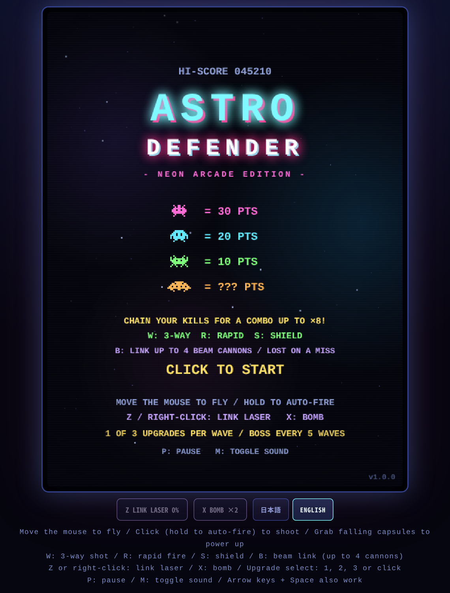
Only three pieces of HTML
The page needs just a <canvas> for the screen, a row of buttons under it, and a paragraph for the control hints.
45<div class="frame"><canvas id="game" width="480" height="640"></canvas></div>
46<div class="actions">
47 <button id="laserButton" type="button" disabled>Z 合体レーザー 0%</button>
48 <button id="bombButton" type="button" disabled>X ボム ×2</button>
49 <div class="lang" role="group" aria-label="Language / 言語">
50 <button id="langJa" type="button" aria-pressed="true">日本語</button>
51 <button id="langEn" type="button" aria-pressed="false">ENGLISH</button>
52 </div>
53</div>
54<p class="hint" id="hint"></p><canvas width="480" height="640">— the game screen: a 480 × 640 pixel sheet of paper that the JavaScript repaints about 60 times a second.#laserButton/#bombButton— the special-attack buttons. They are real HTML buttons so that touch players can use them too.- The two
.langbuttons — the display-language switch (chapter 19). #hint— the control hints. It starts empty; JavaScript fills it with text in the current language.
CSS builds the arcade cabinet
The screen is a fixed 480 × 640, but CSS scales it to fit the window. The important line is image-rendering: pixelated:
without it the browser would blur the enlarged pixels, and the retro look would be lost.
21 canvas {
22 width: min(92vw, max(240px, calc(75dvh - 150px))); aspect-ratio: 3 / 4;
23 image-rendering: pixelated; background: #04050c; border-radius: 6px;
24 touch-action: none; user-select: none;
25 }
26 /* CRT風の走査線とビネット */
27 .frame::after {
28 content: ""; position: absolute; inset: 8px; border-radius: 6px; pointer-events: none;
29 background:
30 repeating-linear-gradient(to bottom, rgba(255,255,255,.03) 0 1px, transparent 1px 3px),
31 radial-gradient(ellipse at center, transparent 55%, rgba(0,0,10,.35));
32 }.frame::after means “put one more transparent layer on top of the frame”. Thin horizontal stripes (repeating-linear-gradient) and
darkened corners (radial-gradient) together imitate an old CRT television. pointer-events: none makes the layer invisible to clicks.
A map of the JavaScript
The main <script> is about 2,050 lines long, but comments of the form /* ===== heading ===== */ divide it into 16 blocks.
From top to bottom they go: tools → assets → data → rules → input → update → draw → loop.
| Line | Block | What it does | Chapter |
|---|---|---|---|
| L59 | Utilities | Screen size and small helpers such as clamp, rand, hit | 04 06 |
| L79 | Localization | The Japanese / English string table and the switch | 19 |
| L181 | Sound | Sound effects synthesized with Web Audio | 18 |
| L267 | Music | A synthwave loop generated in real time | 18 |
| L346 | Sprites | Pixel art, glows and trails built from strings and gradients | 05 |
| L618 | Game state | Constants, every variable, wave creation, scoring, game over | 03 07 11 |
| L803 | Combo & power-ups | Multiplier math, capsule drops and their effects | 11 12 |
| L840 | Specials & upgrades | Link laser, bomb, the three-card upgrade pick | 13 14 |
| L932 | Battleship | Boss creation, damage and attack pattern | 15 |
| L1009 | Flights | Dives, zigzags and flanking runs out of the formation | 16 |
| L1050 | Effects | Particles, shockwave rings, floating text | 17 |
| L1070 | Input | Mouse, touch, keyboard, buttons, language switch | 08 |
| L1190 | Barriers | How the green shields crumble | 10 |
| L1233 | Update | Per-frame simulation: movement, firing, collisions, wave progress | 07 09 |
| L1573 | Draw | Background, enemies, player, HUD and every screen | 04 17 |
| L2073 | Main loop | Update and draw, about 60 times a second | 02 |
How data flows
Almost every game program has the same skeleton. Input changes some variables, update advances those variables according to the rules, and draw turns them into a picture. Those three steps just go round and round.
You can usually tell what a function does from the first word of its name.
make… creates something (makeWave, makeBarriers, makeSprite),
update… advances it every frame (updatePlay, updateBoss),
draw… paints it (drawHud, drawTitle),
and spawn… launches an effect. When you get lost, look at the prefix.
02The game loop — a heartbeat at 60 Hz
The last thirty or so lines of the file drive the entire game.
2075let last = performance.now();
2076let rafId = 0; // 予約中の requestAnimationFrame。0 ならループは止まっている
2077const IDLE_FRAME_MS = 1000 / 30; // タイトルとゲームオーバーは動きが少ないので 30fps に抑える
2078
2079function frame(now) {
2080 rafId = 0;
2081 if ((state === "title" || state === "gameover") && now - last < IDLE_FRAME_MS - 1) {
2082 rafId = requestAnimationFrame(frame);
2083 return;
2084 }
2085 const dt = Math.min((now - last) / 1000, 0.05);
2086 last = now;
2087 if (!paused) update(dt);
2088 draw(now / 1000);
2089 // ポーズ中は静止画のままにしてループを止める。再開は setPaused(false) → ensureLoop()。
2090 if (!paused) rafId = requestAnimationFrame(frame);
2091}
2092
2093function ensureLoop() {
2094 if (rafId || paused) return;
2095 last = performance.now();
2096 rafId = requestAnimationFrame(frame);
2097}
2098
2099// ポーズ中はループが止まっているので、表示に関わる設定を変えた時は 1 フレームだけ描き直す。
2100function redrawIfPaused() {
2101 if (paused) draw(performance.now() / 1000);
2102}
2103
2104ensureLoop();frame does exactly four things.
- Compute
dt, the seconds elapsed since the previous frame.nowis in milliseconds, so it is divided by 1000. - Advance the world by
dtseconds withupdate(dt). Skipped while paused. - Paint the current state with
draw(t). This still runs for the first frame after pausing, which is how the “PAUSED” text gets on screen. - Unless paused, ask the browser to call
frameagain at the next screen refresh withrequestAnimationFrame(frame). That keeps it spinning. While paused nothing is booked, so the loop stops;setPaused(false)restarts it throughensureLoop().
Three small devices keep the loop from burning CPU for no reason. rafId remembers whether the next frame is already booked, and ensureLoop() books one only if it is not (booking twice would run the game at double speed).
At the top of frame, on quiet screens such as the title and game over, the function just re-books itself and returns unless IDLE_FRAME_MS (1/30 s) has passed since the last frame, which caps those screens at 30 fps.
And because the loop is stopped while paused, switching the language or the sound during a pause goes through redrawIfPaused(), which paints a single frame.
The browser only works when there is something to show.
Why everything moves by “speed × dt”
Look through the code and you will find that everything that moves is written as position += speed * dt. The player’s bullets, for example, use p.y -= 470 * dt:
“470 pixels per second”. At 1/60 of a second per frame that is about 7.8 pixels per frame.
// Bad: "5 px per frame" runs twice as fast on a 120 Hz display
x += 5;
// Good: "300 px per second" × elapsed seconds. Same speed at 60 Hz, at 120 Hz, or when frames are dropped
x += 300 * dt;Math.min((now - last) / 1000, 0.05) says “dt is never more than 0.05 seconds”.
If you switch tabs and come back ten seconds later, a naive dt = 10 would fling every bullet 4,700 pixels in a single step, straight through everything.
With the cap, a long gap turns into “a small step”, and nothing breaks.
update comes in two layers
update first advances the things that move on every screen (stars, particles, the animated score) in updateCommon, then branches on state:
updatePlay during play, timed screen changes otherwise. That state variable is the subject of the next chapter.
1558function update(dt) {
1559 stateT += dt;
1560 updateCommon(dt);
1561 if (state === "play") {
1562 updatePlay(dt);
1563 } else if (state === "dying") {
1564 if (stateT > 1.15) {
1565 if (lives > 0) { player.alive = true; player.inv = 2; setState("play"); }
1566 else gameOver();
1567 }
1568 } else if (state === "clear") {
1569 if (stateT > 1.6) openUpgrades();
1570 }
1571}03States — which screen are we on?
Title, playing, dying… one variable names the current screen, and the code branches on it.
649let state = "title"; // title | play | dying | clear | upgrade | gameover
650let stateT = 0;
651let paused = false;| state | What is on screen | How it moves on |
|---|---|---|
| title | Title screen with the score table and controls | Click / Space / Enter → startGame() → play |
| play | Playing. The only state in which updatePlay runs | Hit → dying / formation wiped out → clear / invaded → gameover |
| dying | The 1.15 seconds while the ship explodes | Lives left → play / no lives → gameover |
| clear | “WAVE CLEAR!” for 1.6 seconds | Timer → upgrade |
| upgrade | Pick one of three cards. Combat is frozen | Pick a card → build the next wave → play |
| gameover | Results | Click after 0.6 s → startGame() → play |
All changes go through setState()
686function setState(s) {
687 state = s; stateT = 0;
688 cvs.style.cursor = (s === "play" && !paused) ? "none" : "pointer";
689}The state is only ever changed through setState(). It resets stateT (seconds spent in the current state) to zero and hides the mouse cursor during play.
stateT keeps growing inside update (stateT += dt), so timing rules such as “1.15 seconds after entering dying” or “1.6 seconds after clear”
all come from this one variable.
Pause is not a value of state; it is a separate variable, paused. Pausing can overlap with both “playing” and “dying”.
If it were state = "paused", unpausing would have to remember whether it was play or dying before.
Things that can be true at the same time belong in separate variables.
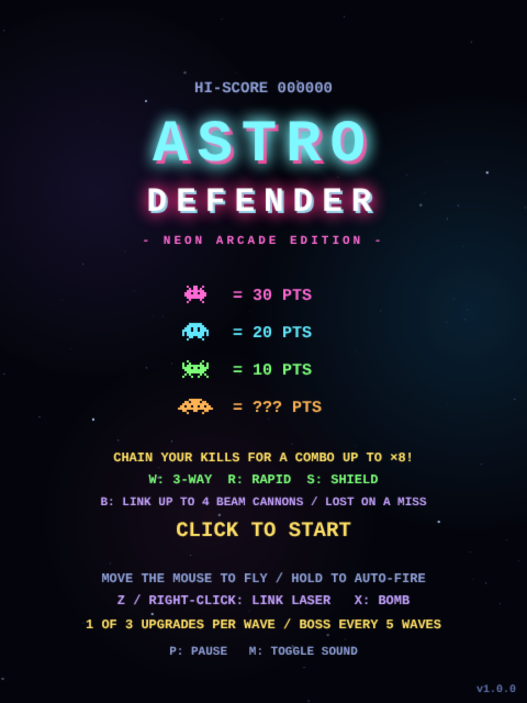
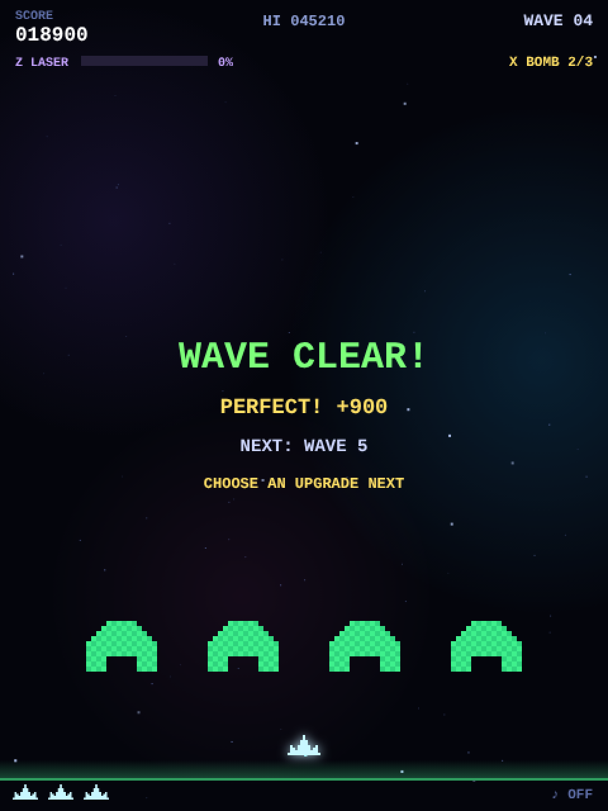
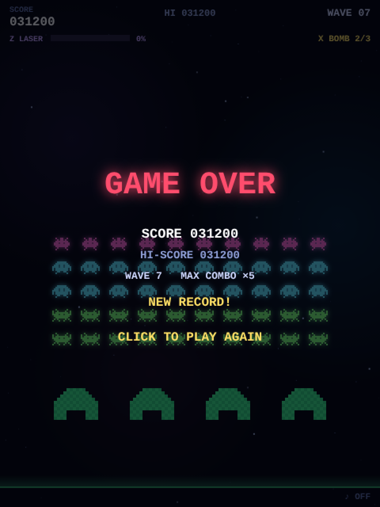
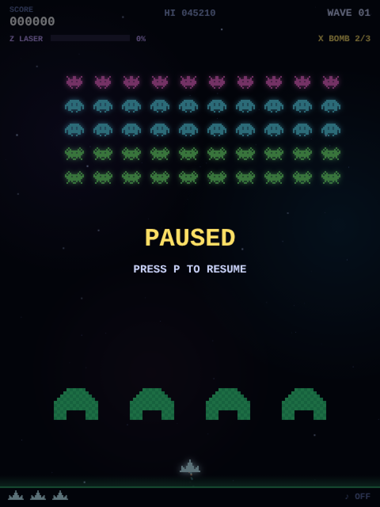
04Drawing on the canvas — coordinates and text
A canvas is a sheet of paper that paints when you tell it to. Paint cannot be moved, so every frame repaints everything.
62const W = 480, H = 640;
63const cvs = document.getElementById("game");
64const ctx = cvs.getContext("2d", { alpha: false }); // 毎フレーム全面を塗るので不透明にし、ページとの合成コストを下げるctx, the “context”, is the toolbox for drawing on the canvas: ctx.fillRect(x, y, w, h) fills a rectangle,
ctx.drawImage(img, x, y) pastes an image, ctx.fillText writes text, and so on.
The second argument, { alpha: false }, asks for a canvas without transparency. Every frame paints the whole canvas anyway, and an opaque canvas is cheaper for the browser to composite with the page.
Unlike a maths graph, canvas y grows downward. That is why the player’s bullets do p.y -= 470 * dt (up) and enemy bullets do b.y += b.vy * dt (down).
Remember it as “closer to the ground = bigger y”.
drawText, the shared text helper
Writing text on a canvas means setting the font, colour and alignment every time before calling fillText. That is tedious, so it is wrapped in one function.
171function drawTextOn(g, s, x, y, o = {}) {
172 g.font = `${o.weight || 700} ${o.size || 13}px 'Courier New', ui-monospace, monospace`;
173 g.fillStyle = o.color || "#cfd8ff";
174 g.textAlign = o.align || "center";
175 g.textBaseline = "alphabetic";
176 g.fillText(s, x, y);
177}
178
179function drawText(s, x, y, o) { drawTextOn(ctx, s, x, y, o); }o = {} is an options argument. A call such as drawText("SCORE", 12, 15, { align: "left", size: 10 }) passes only the settings that differ from the defaults;
o.size || 13 is the usual idiom for “13 unless specified”.
The real work is in drawTextOn, which takes the target context g as its first argument; drawText is a one-liner that passes ctx.
The split lets the same function draw onto the off-screen canvases used for pre-rendered text such as the title logo (chapter 05).
Converting mouse coordinates to canvas coordinates
The canvas is scaled by CSS, so the mouse position on screen (in pixels) does not match the internal coordinates (480 wide). The fix is a ratio.
1072function canvasX(e) {
1073 const r = cvs.getBoundingClientRect();
1074 return ((e.clientX - r.left) * W) / r.width;
1075}getBoundingClientRect() tells you where the canvas is on screen and how large it is displayed. Divide the distance from its left edge by the displayed width
and multiply by the internal width W. If the canvas is shown at twice its size, a 200-pixel mouse move becomes 100 internal units.
Draw order is stacking order
Whatever is drawn later ends up on top. draw() goes background → game → HUD → overlays (pause, game over).
2053function draw(t) {
2054 refreshActionButtons();
2055 ctx.fillStyle = "#04050c";
2056 ctx.fillRect(0, 0, W, H);
2057
2058 ctx.save();
2059 if (shake > 0) ctx.translate(rand(-1, 1) * shake * 10, rand(-1, 1) * shake * 10);
2060
2061 drawBackground(t);
2062
2063 if (state === "title") {
2064 drawTitle(t);
2065 } else {
2066 drawGame(t);
2067 drawHud();
2068 drawOverlay(t);
2069 }
2070 ctx.restore();
2071}ctx.save() remembers the current settings (origin, colours, alpha, …) and ctx.restore() brings them back.
In between, ctx.translate(dx, dy) shifts everything drawn afterwards by (dx, dy).
While shake is non-zero the whole frame is nudged by a random offset, and restore undoes it afterwards. That is the entire screen-shake implementation.
05Pixel art from strings — sprites
There is not a single image file. Aliens and ship alike are built at start-up from strings of X and dots.
makeSprite — paint only the X cells
348function makeSprite(rows, color, scale = 2) {
349 const c = document.createElement("canvas");
350 c.width = rows[0].length * scale;
351 c.height = rows.length * scale;
352 const g = c.getContext("2d");
353 g.fillStyle = color;
354 rows.forEach((row, y) => {
355 for (let x = 0; x < row.length; x++) if (row[x] === "X") g.fillRect(x * scale, y * scale, scale, scale);
356 });
357 return c;
358}Simple as it looks: walk the array of strings row by row, character by character, and fill a tiny square wherever there is an "X".
With scale = 2 each character becomes a 2 × 2 pixel block. The target is a canvas created with document.createElement("canvas"), one that is never shown on the page.
A canvas made with document.createElement("canvas") is invisible until you add it to the document. You can still draw on it, and — the important part —
you can paste it into another canvas with ctx.drawImage(thatCanvas, x, y) as if it were an image. Using it as an “image factory” is a classic technique.
Alien designs are two-frame animations
430 a: { // トゲ型エイリアン
431 pts: 30, color: "#ff6ad5",
432 frames: [[
433 ".X..XX..X.",
434 "..X.XX.X..",
435 ".XXXXXXXX.",
436 "XXX.XX.XXX",
437 "XXXXXXXXXX",
438 ".XXXXXXXX.",
439 "..X....X..",
440 ".X......X.",
441 ], [
442 "X...XX...X",
443 ".X..XX..X.",
444 ".XXXXXXXX.",
445 "XXX.XX.XXX",
446 "XXXXXXXXXX",
447 ".XXXXXXXX.",
448 "..X....X..",
449 "...X..X...",
450 ]],frames holds two pictures whose legs differ slightly. Every time the formation steps, form.anim flips between 0 and 1, and ty.img[form.anim]
picks the frame to draw. That alone makes the aliens look like they are crawling.
A short loop right after the definition builds the image and the glow for all three alien types ahead of time.
497for (const k in TYPES) {
498 const t = TYPES[k];
499 t.img = t.frames.map(f => makeSprite(f, t.color));
500 t.glow = t.img.map(im => withGlow(im, 3, 0.8));
501 t.w = t.img[0].width;
502 t.h = t.img[0].height;
503}Edit the pattern on the left and the result of makeSprite and withGlow (the game’s own functions) appears on the right. X paints, . is transparent.
Neon glow is a blurred copy
To make something glow, draw a blurred copy underneath and the sharp original on top. withGlow produces the blurred version.
365function withGlow(img, blur = 3, alpha = 0.85) {
366 const pad = blur * 3;
367 const c = document.createElement("canvas");
368 c.width = img.width + pad * 2;
369 c.height = img.height + pad * 2;
370 const g = c.getContext("2d");
371 if (CAN_FILTER) {
372 g.filter = `blur(${blur}px)`;
373 g.globalAlpha = alpha;
374 g.drawImage(img, pad, pad);
375 g.filter = "none";
376 } else {
377 g.globalAlpha = alpha / 6;
378 for (let dx = -blur; dx <= blur; dx += blur)
379 for (let dy = -blur; dy <= blur; dy += blur) g.drawImage(img, pad + dx, pad + dy);
380 }
381 return { img: c, pad };
382}g.filter = "blur(3px)"— the canvas supports CSS filters; anything drawn after this is blurred.pad— a blur spills outside the original image, so the canvas is made larger with a margin. When drawing, the margin is subtracted again (r.x - gl.pad) to line things up.- When
CAN_FILTERis false (old browsers) the image is drawn nine times, slightly offset and semi-transparent, as a poor man’s blur.
The glow around bullets and capsules is a radial gradient image from glowDot: opaque in the middle, fading to transparent at the edge.
384function glowDot(hex, r) {
385 const c = document.createElement("canvas");
386 c.width = c.height = r * 2;
387 const g = c.getContext("2d");
388 const gr = g.createRadialGradient(r, r, 0, r, r, r);
389 gr.addColorStop(0, hex + "dd");
390 gr.addColorStop(0.5, hex + "55");
391 gr.addColorStop(1, hex + "00");
392 g.fillStyle = gr;
393 g.fillRect(0, 0, r * 2, r * 2);
394 return c;
395}Blurs and gradients are too slow to compute every frame. So they are rendered into images before the game starts (pre-rendering) and only drawImaged during play.
Every upper-case constant such as SHIP_GLOW, P_GLOW or NEBULAE is one of these ready-made images.
505const SHIP_IMG = makeSprite([
506 "......X......",
507 "......X......",
508 ".....XXX.....",
509 ".....XXX.....",
510 ".X..XXXXX..X.",
511 ".XX.XXXXX.XX.",
512 ".XXXXXXXXXXX.",
513 "XXXXXXXXXXXXX",
514], "#c8f7ff");
515const SHIP_GLOW = withGlow(SHIP_IMG, 4, 0.9);The pre-rendering helper — prerender
“Create an off-screen canvas, draw on it, return it” is wrapped in one function, prerender. What to draw is passed in as the paint function.
409// shadowBlur 付きの描画は毎フレーム行うと重いので、形が変わらないものは一度だけ画像にしておく。
410function prerender(w, h, paint, opts) {
411 const c = document.createElement("canvas");
412 c.width = w; c.height = h;
413 paint(c.getContext("2d", opts));
414 return c;
415}Even heavier than a blur is shadowBlur, the canvas feature that surrounds a shape with a blurred glow. Used every frame it re-blurs on every draw,
so anything whose shape never changes is turned into an image at start-up with this helper. The title logo is the prime example: it becomes two images, TITLE_GLOW (the glow only) and TITLE_TEXT (the letters only).
549// タイトルロゴ: 光彩層と文字層に分け、光彩層の透明度を揺らして脈動させる。
550const TITLE_LOGO_Y = 80; // ロゴ画像を置くキャンバス上の y
551function paintTitleLogo(g, glow) {
552 const y = -TITLE_LOGO_Y;
553 try { g.letterSpacing = "8px"; } catch (e) {}
554 if (glow) { g.shadowColor = "#7df9ff"; g.shadowBlur = 20; }
555 drawTextOn(g, "ASTRO", W / 2 + 3, 149 + y, { size: 54, color: "#ff2e88", weight: 900 });
556 drawTextOn(g, "ASTRO", W / 2, 146 + y, { size: 54, color: "#7df9ff", weight: 900 });
557 if (glow) g.shadowColor = "#ff2e88";
558 drawTextOn(g, "DEFENDER", W / 2 + 2, 194 + y, { size: 31, color: "#7df9ff", weight: 900 });
559 drawTextOn(g, "DEFENDER", W / 2, 192 + y, { size: 31, color: "#ffffff", weight: 900 });
560}
561const TITLE_GLOW = prerender(W, 160, g => paintTitleLogo(g, true));
562const TITLE_TEXT = prerender(W, 160, g => {
563 paintTitleLogo(g, false);
564 try { g.letterSpacing = "3px"; } catch (e) {}
565 drawTextOn(g, "- NEON ARCADE EDITION -", W / 2, 222 - TITLE_LOGO_Y, { size: 11, color: "#ff6ad5" });
566});1971 ctx.globalAlpha = 0.7 + 0.3 * Math.sin(t * 2); // 光彩の脈動
1972 ctx.drawImage(TITLE_GLOW, 0, TITLE_LOGO_Y);
1973 ctx.globalAlpha = 1;
1974 ctx.drawImage(TITLE_TEXT, 0, TITLE_LOGO_Y);Drawing it is two drawImage calls: the glow with a pulsing globalAlpha, then the letters on top. Varying the alpha reads as a pulse just as well as varying the blur radius did.
The GAME OVER text (GAMEOVER_TEXT) and the boss hull (BOSS_HULL, chapter 15) are made the same way,
and the link laser (chapter 13) and the alien formation (chapter 17) extend the idea to “redraw only when something changes”.
06Collision detection — overlapping rectangles
A bullet hitting an alien, a capsule being picked up, an enemy touching the ship: one line of code decides all of it.
72const hit = (a, b) => a.x < b.x + b.w && a.x + a.w > b.x && a.y < b.y + b.h && a.y + a.h > b.y;a and b are objects with { x, y, w, h } (top-left corner, width, height). The rectangles overlap only when all four conditions hold.
Put the other way round: if even one of them fails, the rectangles are apart.
Move the red rectangle with the mouse (or your finger) and watch the four conditions change.
- a.x < b.x + b.w
- a.x + a.w > b.x
- a.y < b.y + b.h
- a.y + a.h > b.y
Hit boxes are computed on demand
The only thing stored about the player’s position is player.x, the centre. The rectangle used for collisions is built by a function whenever it is needed.
703function playerRect() { return { x: player.x - 13, y: PLAYER_Y, w: 26, h: 16 }; }711// 毎フレーム何百回も呼ぶ当たり判定では SCRATCH に書き込んで使い回し、オブジェクト生成(GC 負荷)を避ける。
712// SCRATCH の中身は次の alienRectInto 呼び出しで上書きされるので、保持せずその場で使い切ること。
713const SCRATCH = { x: 0, y: 0, w: 0, h: 0 };
714function alienRectInto(a, out) {
715 const t = TYPES[a.type];
716 if (a.flight) { out.x = a.flight.x; out.y = a.flight.y; }
717 else { out.x = form.ox + a.c * CELL_W + (CELL_W - t.w) / 2; out.y = form.oy + a.r * CELL_H; }
718 out.w = t.w; out.h = t.h;
719 return out;
720}
721function alienRect(a) { return alienRectInto(a, { x: 0, y: 0, w: 0, h: 0 }); }alienRectInto computes the position from the alien’s row and column in the formation (next chapter) and writes it into the out argument. An alien that is currently flying (a.flight is set)
has its own free position, which takes priority. alienRect is a thin wrapper that writes into a fresh object and returns it.
The collision loops call this function hundreds of times per frame. Creating a new { x, y, w, h } each time gives the garbage collector more used-up objects to clean away, and its pauses are a classic cause of stutter.
So the hot loops write alienRectInto(a, SCRATCH), reusing one shared object, SCRATCH. Its contents are overwritten by the next call, so the rule is use it immediately and never keep it.
Where the result has to be kept, as in the tests, alienRect is used instead.
If you stored both “centre x” and “top-left x”, sooner or later you would update one and forget the other. Keep only the source values and compute the derived ones. This principle applies far beyond games.
When you need a circle
The bomb affects everything within 240 pixels of the ship — a circle. For that, take the distance between two points with Math.hypot(dx, dy) and compare it with the radius.
875 if (Math.hypot(r.x + r.w / 2 - player.x, r.y + r.h / 2 - PLAYER_Y) <= BOMB_RADIUS) killAlien(a, r);07The enemy formation — 50 aliens as one block
No alien stores its own coordinates. Each one knows only its row and column; the formation knows where its top-left corner is.
620const ROWS = 5, COLS = 10, CELL_W = 36, CELL_H = 30, DROP = 14;
621const ROW_TYPE = ["a", "b", "b", "c", "c"];
622const TOTAL = ROWS * COLS;662let aliens = [], aliveN = 0;
663const form = { ox: 60, oy: 96, dir: 1, anim: 0, animT: 0 };A single alien is just { r: row, c: column, type: kind, alive: true/false }. Its position is the formation’s top-left corner form.ox, form.oy
plus column × 36 pixels and row × 30 pixels (that is what alienRect computed in the previous chapter).
Building a wave — makeWave
This function resets everything at the start of a wave. A double loop lays out 50 aliens, and the row number decides the type (ROW_TYPE).
744function makeWave() {
745 aliens = [];
746 boss = null;
747 if (wave % 5 === 0) makeBoss();
748 else {
749 for (let r = 0; r < ROWS; r++)
750 for (let c = 0; c < COLS; c++)
751 aliens.push({ r, c, type: ROW_TYPE[r], alive: true });
752 }
753 aliveN = aliens.length;
754 form.ox = 60;
755 form.oy = 96 + Math.min(wave - 1, 5) * 10;
756 form.dir = 1; form.anim = 0; form.animT = 0;
757 pBullets = []; eBullets = []; particles = []; popups = []; rings = []; powerups = [];
758 saucer = null; saucerSoundStop(); saucerT = rand(10, 20);
759 fireT = 1.5; bannerT = 1.3; freezeT = 0;
760 waveNoDamage = true; perfectBonus = 0;
761 player.alive = true; player.inv = 1.5; player.cool = 0;
762 special.laserT = 0; special.bombT = 0;
763 flightT = 6; flightCount = 0; upgradeChoices = [];
764 makeBarriers();
765}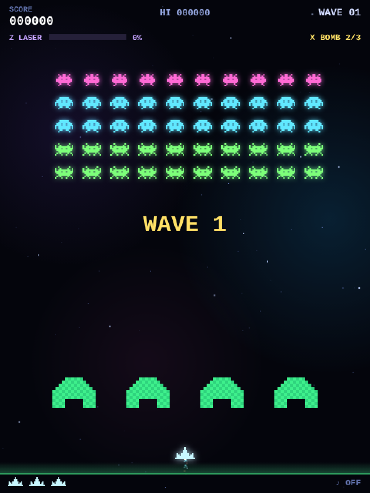
Bullets, particles, timers, the ship’s state: everything that must not leak from one wave into the next is cleared here in one go. When you add a new kind of object (a new bullet type, say), remember to reset it here as well.
Moving the formation — bounce at the edges and step down
1397 // --- 編隊移動 ---
1398 if (aliens.some(a => a.alive && !a.flight)) {
1399 form.ox += form.dir * formSpeed() * dt;
1400 const b = formBounds();
1401 if (form.dir > 0 && b.max > W - 8) { form.ox -= b.max - (W - 8); form.dir = -1; form.oy += DROP; }
1402 else if (form.dir < 0 && b.min < 8) { form.ox += 8 - b.min; form.dir = 1; form.oy += DROP; }
1403
1404 const period = clamp(0.65 * (aliveN / TOTAL) + 0.08, 0.1, 0.73);
1405 form.animT += dt;
1406 if (form.animT >= period) {
1407 form.animT = 0; form.anim ^= 1;
1408 sfx.step(form.anim === 1);
1409 }
1410
1411 erodeBarriers();- Add “direction × speed × dt” to
form.oxto move sideways. formBounds()finds the leftmost and rightmost living aliens (dead ones are ignored, so the turning point shifts as the edges empty out).- If the right edge passes the screen edge (
W - 8), push it back by the overshoot, flip the direction and move down byDROP(14 pixels). Same on the left. - At a regular period, flip
form.animbetween 0 and 1 (^= 1) and play the marching sound.
Fewer aliens, faster formation
1235function formSpeed() {
1236 const r = aliveN / TOTAL;
1237 let s = 16 + (wave - 1) * 7 + 130 * Math.pow(1 - r, 1.7);
1238 if (aliveN <= 3) s += 55;
1239 if (aliveN === 1) s += 75;
1240 return Math.min(s, 240);
1241}The smaller the surviving fraction r, the faster the formation, with extra boosts for the last three and the last one.
In the original arcade Space Invaders the speed-up was an accident — fewer sprites meant less work per frame — and it became a signature feature. This game reproduces it deliberately with a formula.
| Alive | 50 | 40 | 30 | 20 | 10 | 5 | 3 | 1 |
|---|---|---|---|---|---|---|---|---|
| Speed on wave 1 (px/s) | 16 | 24 | 43 | 71 | 105 | 125 | 188 | 240 |
| Speed on wave 5 (px/s) | 44 | 52 | 71 | 99 | 133 | 153 | 216 | 240 |
This runs the real formSpeed() and the real edge-bounce logic. Reduce the number of survivors and watch the speed and the marching tempo change.
Only the bottom alien of each column shoots
As in a real formation, the aliens at the back cannot fire past the ones in front. For each column the code finds the lowest living alien (largest r) and picks one of those at random.
1427 // --- 敵の射撃 ---
1428 fireT -= dt;
1429 const maxEB = Math.min(7, 2 + wave);
1430 if (fireT <= 0 && bannerT <= 0 && aliveN > 0) {
1431 const base = Math.max(0.3, 1.15 - (wave - 1) * 0.07);
1432 fireT = base * rand(0.5, 1.5) * (0.55 + 0.45 * (aliveN / TOTAL));
1433 if (eBullets.length < maxEB) {
1434 const bottoms = [];
1435 for (let c = 0; c < COLS; c++) {
1436 let low = null;
1437 for (const a of aliens) if (a.alive && !a.flight && a.c === c && (!low || a.r > low.r)) low = a;
1438 if (low) bottoms.push(low);
1439 }
1440 if (bottoms.length) {
1441 const shooter = bottoms[(Math.random() * bottoms.length) | 0];
1442 const r = alienRect(shooter);
1443 eBullets.push({
1444 x: r.x + r.w / 2 - 1.5, y: r.y + r.h, w: 3, h: 9,
1445 vy: Math.min(330, 150 + wave * 14) * rand(0.9, 1.1),
1446 });
1447 }
1448 }
1449 }The firing interval fireT gets shorter as waves progress and as aliens die. There is also a cap maxEB on how many enemy bullets can be on screen, so it never becomes an unfair bullet hell.
Invasion means game over
1413 // 侵入チェック
1414 const prect = playerRect();
1415 for (const a of aliens) {
1416 if (!a.alive || a.flight) continue;
1417 const r = alienRectInto(a, SCRATCH);
1418 if (r.y + r.h >= PLAYER_Y + 8 || hit(r, prect)) {
1419 spawnBurst(prect.x + 13, prect.y + 8, "#c8f7ff", 26, 160);
1420 boom(0.6, 0.3, 500);
1421 gameOver();
1422 return;
1423 }
1424 }08The player and input — mouse and keyboard alike
Input handlers only write variables. Actually moving the ship is updatePlay’s job.
Pointer events remember a target x
1093window.addEventListener("pointermove", e => {
1094 if (e.target !== cvs) return;
1095 if (state === "upgrade") { const i = upgradeAtPointer(e); if (i >= 0) upgradeIndex = i; return; }
1096 mouseX = clamp(canvasX(e), 0, W);
1097 inputMode = "mouse";
1098});
1099cvs.addEventListener("pointerdown", e => {
1100 e.preventDefault();
1101 ac(); if (!paused) musicStart();
1102 if (state === "upgrade") { if (e.button === 0) chooseUpgrade(upgradeAtPointer(e)); return; }
1103 if (e.button === 2) { activateLaser(); return; }
1104 if (e.button !== 0) return;
1105 mouseX = clamp(canvasX(e), 0, W);
1106 inputMode = "mouse";
1107 handlePress();
1108 if (state === "play" && !paused) shooting = true;
1109});
1110window.addEventListener("pointerup", () => { shooting = false; });pointermove just stores the mouse position in mouseX; it does not move the ship. pointerdown prepares the audio (ac()),
fires the laser on a right click, and on a left click raises the shooting flag.
Events arrive at irregular times. A fast mouse produces several pointermove events per frame; a still mouse produces none.
So handlers only record what the player wants, and the actual movement happens in updatePlay, which runs at a steady rhythm.
That also makes it easy to enforce a speed limit such as “at most 340 pixels per second”.
The player part of updatePlay
1353 // --- 自機 ---
1354 const speed = 340 * (1 + upgrades.speed * 0.15);
1355 if (inputMode === "mouse") {
1356 const target = clampPlayerX(mouseX);
1357 player.x = clampPlayerX(player.x + clamp(target - player.x, -speed * dt * 2, speed * dt * 2));
1358 } else player.x = clampPlayerX(player.x + speed * dt * ((keys.right ? 1 : 0) - (keys.left ? 1 : 0)));
1359 player.cool -= dt;
1360 player.inv = Math.max(0, player.inv - dt);
1361 active.wide = Math.max(0, active.wide - dt);
1362 active.rapid = Math.max(0, active.rapid - dt);
1363 special.bombT = Math.max(0, special.bombT - dt);- In mouse mode the difference to the target is
clamped to “the most we may move this frame” before it is added. The ship never teleports; it chases the cursor at top speed. - In keyboard mode,
(right ? 1 : 0) - (left ? 1 : 0)produces -1, 0 or +1, which is multiplied by the speed. Pressing both keys gives 0, so the ship stops — for free. player.cool(fire cooldown),player.inv(invulnerability) and the power-up timers are all decreased bydtevery frame, withMath.max(0, ...)keeping them from going negative.
705function clampPlayerX(x) {
706 // 連結砲も画面内に収める。当たり判定は自機本体のみ。
707 const margin = active.beam > 0 ? Math.abs(BEAM_OFFSETS[active.beam - 1]) + 8 : 20;
708 return clamp(x, margin, W - margin);
709}The screen-edge clamp also widens its margin so that linked beam cannons on either side of the ship never leave the screen.
Shooting — cooldown and bullet cap
1365 const cd = active.rapid > 0 ? 0.12 : 0.27;
1366 const maxB = (active.rapid > 0 || active.wide > 0) ? 12 : 3;
1367 // ビームは通常弾の上限に数えず、共通のクールダウンで同時発射する。
1368 const normalBulletCount = pBullets.reduce((n, p) => n + (p.beam ? 0 : 1), 0);
1369 if ((shooting || keys.fire) && player.cool <= 0 && normalBulletCount < maxB) {
1370 const mk = vx => pBullets.push({ x: player.x - 1, y: PLAYER_Y - 10, w: 2, h: 10, vx });
1371 mk(0);
1372 if (active.wide > 0) { mk(-70); mk(70); }
1373 for (let i = 0; i < active.beam; i++) {
1374 const x = player.x + BEAM_OFFSETS[i];
1375 pBullets.push({ x: x - 2, y: PLAYER_Y - 32, w: 4, h: 28, vx: 0, beam: true, pierce: 1 + upgrades.beam, damage: 1 + upgrades.beam * 0.5 });
1376 spawnBurst(x, PLAYER_Y - 4, BEAM_COLOR, 3, 55);
1377 }
1378 player.cool = cd;
1379 for (let i = 0; i < 3; i++) particles.push({
1380 x: player.x + rand(-3, 3), y: PLAYER_Y - 8, vx: rand(-20, 20), vy: rand(-90, -40),
1381 life: 0.1, max: 0.1, color: "#7df9ff", size: 2,
1382 });
1383 sfx.shoot();
1384 if (active.beam > 0) sfx.beam();
1385 }Three conditions: the button is held, the cooldown has expired, and the number of player bullets on screen is below the cap.
mk is a tiny helper that adds one bullet; during a 3-way shot it adds two more with a sideways velocity vx.
Keyboard
1145window.addEventListener("keydown", e => {
1146 const k = e.key.toLowerCase();
1147 if ([" ", "enter", "arrowleft", "arrowright", "arrowup", "arrowdown"].includes(k)) e.preventDefault();
1148 if (e.repeat) return;
1149 if (state === "upgrade") {
1150 if (["1", "2", "3"].includes(k)) chooseUpgrade(Number(k) - 1);
1151 else if (k === "arrowup") upgradeIndex = (upgradeIndex + 2) % 3;
1152 else if (k === "arrowdown") upgradeIndex = (upgradeIndex + 1) % 3;
1153 else if (k === "enter" || k === " ") chooseUpgrade(upgradeIndex);
1154 else if (k === "m") toggleMute();
1155 return;
1156 }
1157 if (k === "p" || k === "escape") {
1158 if (state === "play" || state === "dying") setPaused(!paused);
1159 } else if (k === "m") {
1160 toggleMute();
1161 } else if (k === "z") {
1162 activateLaser();
1163 } else if (k === "x") {
1164 activateBomb();
1165 } else if (k === " " || k === "enter") {
1166 ac(); musicStart(); handlePress(); keys.fire = true;
1167 } else if (k === "arrowleft" || k === "a") {
1168 keys.left = true; inputMode = "keys";
1169 } else if (k === "arrowright" || k === "d") {
1170 keys.right = true; inputMode = "keys";
1171 }
1172});e.key.toLowerCase()ignores the difference between upper and lower case (so Shift or Caps Lock do not matter).e.preventDefault()stops the browser’s default behaviour (Space scrolling the page, for instance).e.repeatmarks the auto-repeat events of a held key. Without ignoring them, holding P would toggle pause on and off repeatedly.
Auto-pause when you leave the tab
1180window.addEventListener("blur", () => { if (state === "play") setPaused(true); });
1181document.addEventListener("visibilitychange", () => {
1182 if (document.hidden) {
1183 if (state === "play") setPaused(true);
1184 else musicStop();
1185 } else if (!paused && actx) {
1186 musicStart();
1187 }
1188});If the window loses focus or the tab is hidden, the game pauses. A small courtesy that stops you dying while you are not looking.
09Bullets and collisions — why the loop runs backwards
Bullets live in arrays. Every frame: move → check for hits → remove.
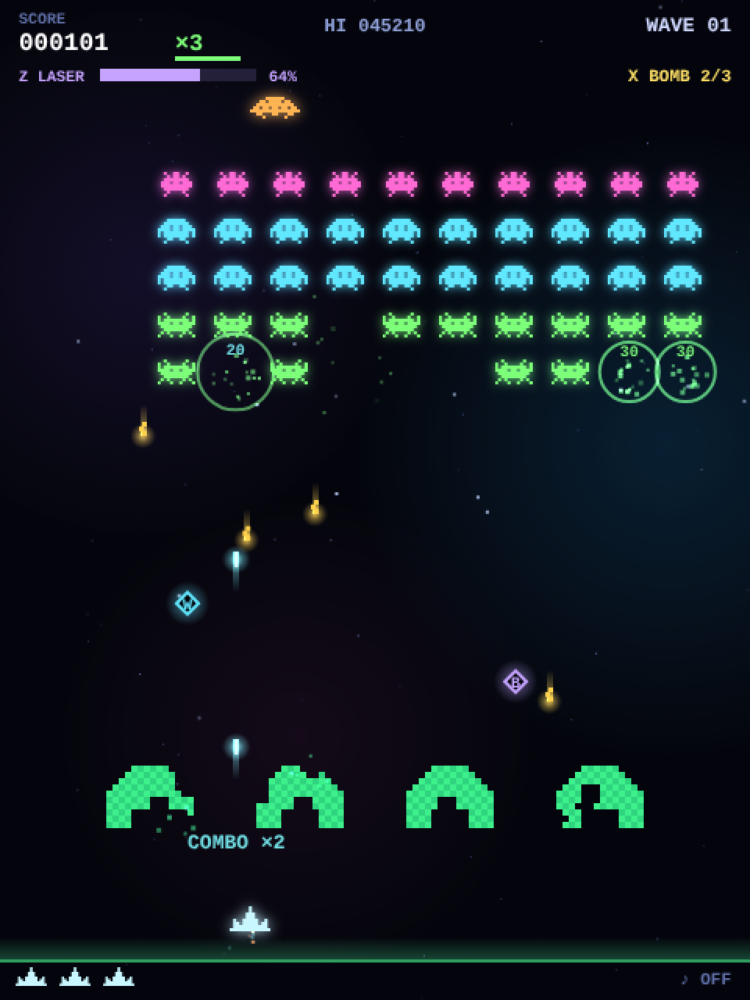
1489 // --- 自弾 ---
1490 for (let i = pBullets.length - 1; i >= 0; i--) {
1491 const p = pBullets[i];
1492 p.y -= 470 * dt;
1493 p.x += (p.vx || 0) * dt;
1494 let dead = p.y + p.h < 0 || p.x < -20 || p.x > W + 20;
1495 if (!dead && barrierHit(p, 1)) dead = true;
1496 if (!dead) {
1497 for (let j = eBullets.length - 1; j >= 0; j--) {
1498 if (hit(p, eBullets[j])) {
1499 spawnBurst(p.x, p.y, "#ffffff", 6, 90);
1500 sfx.spark();
1501 eBullets.splice(j, 1);
1502 dead = true;
1503 break;
1504 }
1505 }
1506 }
1507 if (!dead && saucer && hit(p, saucer)) {
1508 killSaucer();
1509 dead = true;
1510 }
1511 if (!dead && hitBoss(p, p.damage || 1)) dead = true;
1512 if (!dead) {
1513 for (const a of aliens) {
1514 if (!a.alive) continue;
1515 const r = alienRectInto(a, SCRATCH);
1516 if (hit(p, r)) {
1517 killAlien(a, r);
1518 p.pierce = (p.pierce || 1) - 1;
1519 if (p.pierce <= 0) { dead = true; break; }
1520 }
1521 }
1522 }
1523 if (dead) pBullets.splice(i, 1);
1524 }For each bullet the code asks, in order: off screen? hit a barrier? cancelled an enemy bullet? hit the saucer? hit the boss? hit an alien?
Any yes sets dead = true, and the bullet is removed at the end. Beam bullets (p.beam) survive as long as they have pierce left.
The alien test uses alienRectInto(a, SCRATCH) from chapter 06 to fill the shared rectangle, and passes that same rectangle straight to killAlien on a hit.
Why i-- ?
// Counting up: after a splice the later elements shift down by one, and the next element is skipped
for (let i = 0; i < arr.length; i++) { if (cond(arr[i])) arr.splice(i, 1); } // ← dangerous
// Counting down: removing an element never changes the indices of the ones you have not visited yet
for (let i = arr.length - 1; i >= 0; i--) { if (cond(arr[i])) arr.splice(i, 1); } // ← safeEvery array that loses elements mid-loop in this game — player bullets, enemy bullets, particles, capsules — is walked backwards. It is a standard idiom worth memorising by shape.
Particles and rings differ in one respect: they are removed with removeAt (move the last element into the gap, then pop) rather than splice, because splice shifts every later element down, and that adds up with hundreds of particles (chapter 17).
Enemy bullets and getting hit
1526 // --- 敵弾 ---
1527 const prect = playerRect();
1528 for (let i = eBullets.length - 1; i >= 0; i--) {
1529 const b = eBullets[i];
1530 b.y += b.vy * dt;
1531 b.x += (b.vx || 0) * dt;
1532 let dead = false;
1533 if (b.x < -20 || b.x > W + 20) dead = true;
1534 if (b.y + b.h > GROUND_Y) { spawnBurst(b.x + 1, GROUND_Y, "#ffd24d", 5, 60); dead = true; }
1535 if (!dead && barrierHit(b, 1)) dead = true;
1536 if (!dead && player.alive && player.inv <= 0 && hit(b, prect)) { dead = true; damagePlayer(); }
1537 if (dead) eBullets.splice(i, 1);
1538 if (state !== "play") return;
1539 }The hit test includes player.inv <= 0, “no invulnerability left”. Right after respawning or using a bomb, the ship cannot be hit for a while.
1297function damagePlayer() {
1298 waveNoDamage = false;
1299 resetCombo();
1300 if (active.shield > 0) {
1301 active.shield = 0;
1302 player.inv = 1.2;
1303 spawnRing(player.x, PLAYER_Y + 8, "#7dff7a", 240, 0.4);
1304 popup(player.x, PLAYER_Y - 24, "SHIELD BREAK", "#7dff7a", 12);
1305 sfx.shieldBreak();
1306 return;
1307 }
1308 hitPlayer();
1309}1281function hitPlayer() {
1282 lives--;
1283 const pr = playerRect();
1284 spawnBurst(pr.x + 13, pr.y + 8, "#c8f7ff", 30, 170);
1285 spawnBurst(pr.x + 13, pr.y + 8, "#ff9a5c", 18, 110);
1286 spawnRing(pr.x + 13, pr.y + 8, "#ff4d6d", 260, 0.5);
1287 sfx.player();
1288 shake = 0.5;
1289 player.alive = false;
1290 active.beam = 0;
1291 special.laserT = 0;
1292 eBullets = [];
1293 shooting = false;
1294 setState("dying");
1295}damagePlayer first checks for a shield: if there is one, only the shield is lost. Otherwise hitPlayer removes a life, spawns the explosion and switches state to dying.
This is also where a miss removes the linked beam cannons (active.beam).
The flicker after respawning comes from this single line in the draw code. Math.floor(t * 12) % 2 alternates between 0 and 1 twelve times a second; skipping the draw on even values makes the ship blink.
1936 if (player.alive && !(player.inv > 0 && Math.floor(t * 12) % 2 === 0)) {10Barriers — green shields that crumble
A barrier is a tiny 14 × 10 grid. Each hit erodes the cells around the impact point at random.
Building the shape
723function makeBarriers() {
724 barriers = [];
725 const cols = 14, rows = 10, cell = 4, bw = cols * cell;
726 for (let i = 0; i < 4; i++) {
727 const x = (W * (i + 1)) / 5 - bw / 2, y = H - 150;
728 const g = [];
729 for (let r = 0; r < rows; r++) {
730 const line = [];
731 for (let c = 0; c < cols; c++) {
732 let solid = 1;
733 const cut = 4 - r; // 上部の角を斜めに落としたアーチ形
734 if (cut > 0 && (c < cut || c >= cols - cut)) solid = 0;
735 if (r >= rows - 3 && c >= 4 && c < cols - 4) solid = 0; // 下の切り欠き
736 line.push(solid);
737 }
738 g.push(line);
739 }
740 barriers.push({ x, y, w: bw, h: rows * cell, cell, cols, rows, g });
741 }
742}g is a two-dimensional array of 1s and 0s; 1 means the cell still exists. The top corners are cut diagonally (cut) and the bottom middle is hollowed out (from rows - 3 on), giving the familiar arch.
Each barrier also stores its overall width and height as w / h, so the barrier object itself can be passed to hit.
The same makeBarriers and barrierHit logic as the game. Each press lands a bullet at a random position.
Finding the cell that was hit
1192function barrierHit(rect, blast) {
1193 for (const b of barriers) {
1194 if (!hit(rect, b)) continue;
1195 const c0 = Math.max(0, Math.floor((rect.x - b.x) / b.cell));
1196 const c1 = Math.min(b.cols - 1, Math.floor((rect.x + rect.w - 0.01 - b.x) / b.cell));
1197 const r0 = Math.max(0, Math.floor((rect.y - b.y) / b.cell));
1198 const r1 = Math.min(b.rows - 1, Math.floor((rect.y + rect.h - 0.01 - b.y) / b.cell));
1199 for (let r = r0; r <= r1; r++) {
1200 for (let c = c0; c <= c1; c++) {
1201 if (!b.g[r][c]) continue;
1202 for (let dr = -blast; dr <= blast; dr++) {
1203 for (let dc = -blast; dc <= blast; dc++) {
1204 const rr = r + dr, cc = c + dc;
1205 if (rr < 0 || cc < 0 || rr >= b.rows || cc >= b.cols) continue;
1206 if (Math.abs(dr) + Math.abs(dc) <= 1 || Math.random() < 0.55) b.g[rr][cc] = 0;
1207 }
1208 }
1209 spawnBurst(b.x + c * b.cell + 2, b.y + r * b.cell + 2, "#3ef08c", 6, 70);
1210 return true;
1211 }
1212 }
1213 }
1214 return false;
1215}- First a coarse
hitbetween the bullet and the whole barrier rectangle (bitself carriesx, y, w, h). If that misses, move on to the next barrier. - Work out which columns and rows the bullet covers by dividing:
(rect.x - b.x) / b.cell. - Scan that range, and around the first cell that still exists, erode the neighbours within
blastcells. Orthogonal neighbours always go; diagonal ones with 55 % probability, which gives a natural ragged edge. - Spawn a few green particles and return
true. The caller uses that to remove the bullet.
When the formation descends to barrier height, erodeBarriers() mercilessly deletes every cell an alien overlaps. The link laser and the bomb deliberately bypass this function, so they never damage the barriers.
11Score, combo and lives
Follow what happens when an alien dies and you will see every trick that makes the game feel good.
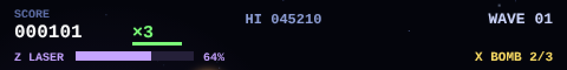
killAlien — nine things that happen on a kill
1254function killAlien(a, r) {
1255 if (!a.alive) return;
1256 a.alive = false; aliveN--;
1257 gainCharge(6);
1258 bumpCombo();
1259 const gain = TYPES[a.type].pts * combo.mult;
1260 addScore(gain);
1261 if (combo.mult > 1) popup(r.x + r.w / 2, r.y, `${gain}`, MULT_COLORS[combo.mult - 1], 10);
1262 spawnBurst(r.x + r.w / 2, r.y + r.h / 2, TYPES[a.type].color, 16, 130);
1263 spawnRing(r.x + r.w / 2, r.y + r.h / 2, TYPES[a.type].color, 160, 0.3);
1264 maybeDrop(r.x + r.w / 2, r.y + r.h / 2);
1265 freezeT = 0.025;
1266 sfx.alien();
1267}- Clear the alive flag and decrement the survivor count
- Charge the laser gauge by 6 (chapter 13)
- Advance the combo
- Add base points × combo multiplier
- If the multiplier is 2 or more, pop the points up on the spot
- Spawn particles and a shockwave ring in the alien’s colour (chapter 17)
- Occasionally drop a capsule (chapter 12)
freezeT = 0.025— stop time for 25 milliseconds, the “hit stop”- Play the sound
Awarding points takes one line. But sound, light, shake and a tiny pause stack up into a kill that feels satisfying. When you build a game, make it work in one line first, then add the touches one at a time.
The combo multiplier
807function bumpCombo() {
808 combo.n++; combo.t = COMBO_WINDOW;
809 const m = Math.min(8, 1 + Math.floor(combo.n / 4));
810 if (m > combo.mult) {
811 combo.mult = m;
812 maxMult = Math.max(maxMult, m);
813 popup(player.x, PLAYER_Y - 34, `COMBO ×${m}`, MULT_COLORS[m - 1], 13);
814 sfx.tier(m);
815 }
816}Every kill increments combo.n and resets the timer combo.t to 2.2 seconds. The multiplier is “+1 every four kills, up to ×8”.
The timer keeps running down in updateCommon; when it reaches zero, or when you get hit, resetCombo() drops it back to ×1.
| Consecutive kills | 0–3 | 4–7 | 8–11 | 12–15 | 16–19 | 20–23 | 24–27 | 28+ |
|---|---|---|---|---|---|---|---|---|
| Multiplier | ×1 | ×2 | ×3 | ×4 | ×5 | ×6 | ×7 | ×8 |
Adding points and extra lives
781function addScore(n) {
782 score += n;
783 if (score > hi) { hi = score; newRecord = true; }
784 while (score >= nextLife) {
785 nextLife += LIFE_STEP;
786 if (lives < 5) {
787 lives++;
788 popup(W / 2, H / 2 - 40, "1UP!", "#ffe066", 20);
789 sfx.oneUp();
790 }
791 }
792}nextLife, the score at which the next life is awarded, advances in steps of 5000. It is a while loop so that a huge single award (a boss kill, say) can cross two thresholds at once. Lives are capped at five.
Saving the hi-score
655let hi = 0;
656try { hi = +(localStorage.getItem(HI_KEY) || 0) || 0; } catch (e) {}779function saveHi() { try { localStorage.setItem(HI_KEY, String(hi)); } catch (e) {} }A small key–value store that persists in the browser. It only stores strings, hence String(hi) when writing and the unary + when reading.
It may be unavailable (private browsing, for example), so every access is wrapped in try { } catch (e) { } and failure is silently ignored.
The score that rolls up
1341 scoreShown += (score - scoreShown) * Math.min(1, dt * 12);
1342 if (Math.abs(score - scoreShown) < 1) scoreShown = score;The HUD shows scoreShown, not the real score. Every frame it closes 12 × dt of the gap, so a big award makes the digits spin and catch up.
Once the gap is under one point the values are snapped together, so it never chases forever.
12Power-ups — capsules and durations
Four capsule types: how they are defined, how they fall, how they are picked up, and how they expire.
641const PU_DEFS = {
642 wide: { label: "W", color: "#61e8ff", dur: 8, name: "3-WAY!" },
643 rapid: { label: "R", color: "#ffe066", dur: 8, name: "RAPID!" },
644 shield: { label: "S", color: "#7dff7a", dur: 0, name: "SHIELD!" },
645 beam: { label: "B", color: BEAM_COLOR, dur: 0, name: "BEAM LINK", max: BEAM_OFFSETS.length },
646};
647for (const k in PU_DEFS) PU_DEFS[k].glowImg = glowDot(PU_DEFS[k].color, 14);| Letter | Name | Effect | How it ends |
|---|---|---|---|
| W | 3-way shot | Two extra diagonal bullets beside the main one | Expires after 8 s (active.wide counts down) |
| R | Rapid fire | Cooldown 0.27 → 0.12 s, bullet cap 3 → 12 | Expires after 8 s |
| S | Shield | Absorbs one hit | Consumed by a hit (no time limit) |
| B | Beam link | Two more cannons per pickup, up to four | All lost on a miss (kept if a shield absorbed it) |
Drop, pick up, apply
818function maybeDrop(x, y) {
819 if (Math.random() > 0.08 || powerups.length >= 2) return;
820 const ks = Object.keys(PU_DEFS);
821 powerups.push({ x, y, type: ks[(Math.random() * ks.length) | 0], ph: Math.random() * 6.28 });
822}If Math.random() > 0.08 nothing happens — so a capsule drops 8 % of the time, and never while two are already on screen. The type is chosen evenly among the four.
824function applyPU(type) {
825 const d = PU_DEFS[type];
826 let name = d.name;
827 if (type === "shield") active.shield = 1;
828 else if (type === "beam") {
829 const wasMax = active.beam === d.max;
830 active.beam = Math.min(d.max, active.beam + 2);
831 player.x = clampPlayerX(player.x);
832 name = wasMax ? "BEAM LINK MAX!" : `${d.name} ×${active.beam}!`;
833 spawnRing(player.x, PLAYER_Y + 8, d.color, 180, 0.35);
834 }
835 else active[type] = d.dur;
836 popup(player.x, PLAYER_Y - 24, name, d.color, 13);
837 sfx.pickup();
838}There are three ways an effect is stored. The shield is a flag (1 or 0), the beam link is a level (0 / 2 / 4 cannons), and the rest are seconds remaining (active[type] = d.dur).
The timed ones count down in updatePlay and simply stop working at zero. No separate “switch it off” code is needed — that is the beauty of the design.
Falling capsules and the magnet field
1468 // --- パワーアップカプセル ---
1469 const prInf = { x: player.x - 17, y: PLAYER_Y - 4, w: 34, h: 24 };
1470 for (let i = powerups.length - 1; i >= 0; i--) {
1471 const u = powerups[i];
1472 u.y += 62 * dt;
1473 if (upgrades.magnet > 0) {
1474 const dx = player.x - u.x, dy = PLAYER_Y - u.y, distance = Math.hypot(dx, dy);
1475 if (distance > 0 && distance < 40 + upgrades.magnet * 35) {
1476 const pull = Math.min(distance, 190 * dt);
1477 u.x += dx / distance * pull; u.y += dy / distance * pull;
1478 }
1479 }
1480 if (u.y > GROUND_Y) { powerups.splice(i, 1); continue; }
1481 if (player.alive && hit({ x: u.x - 8, y: u.y - 8, w: 16, h: 16 }, prInf)) {
1482 applyPU(u.type);
1483 powerups.splice(i, 1);
1484 }
1485 }With the magnet upgrade, capsules within a certain distance are pulled towards the ship. Dividing the offset (dx, dy) by the distance gives a unit direction vector;
multiplying that by the pull amount pull moves the capsule. This “move towards a point” calculation shows up in almost every game.
Linked beam cannons
630const BEAM_OFFSETS = [-24, 24, -42, 42];The first two cannons sit just beside the ship, the third and fourth further out. With active.beam at 2 the first two entries are used; at 4, all of them.
The draw code connects ship and cannons with short lines to show that they are linked.
1939 for (let i = 0; i < active.beam; i++) {
1940 const offset = BEAM_OFFSETS[i];
1941 const inner = i < 2 ? Math.sign(offset) * 10 : BEAM_OFFSETS[i - 2];
1942 ctx.beginPath();
1943 ctx.moveTo(player.x + inner, PLAYER_Y + 11);
1944 ctx.lineTo(player.x + offset, PLAYER_Y + 11);
1945 ctx.stroke();
1946 }
1947 for (let i = 0; i < active.beam; i++) {
1948 ctx.drawImage(CANNON_IMG, player.x + BEAM_OFFSETS[i] - 5, PLAYER_Y - 4);
1949 }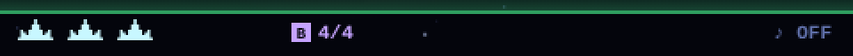
13Specials — the link laser and the bomb
A piercing laser you charge up, and an emergency bomb. The highlight is a single function that decides when they may be used.
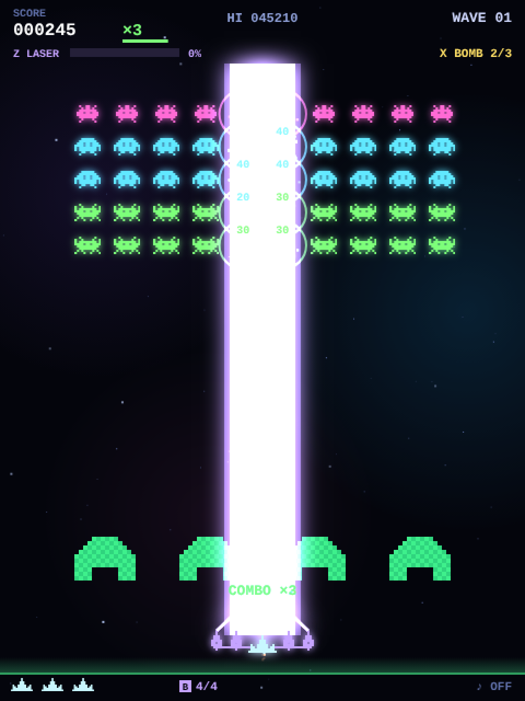
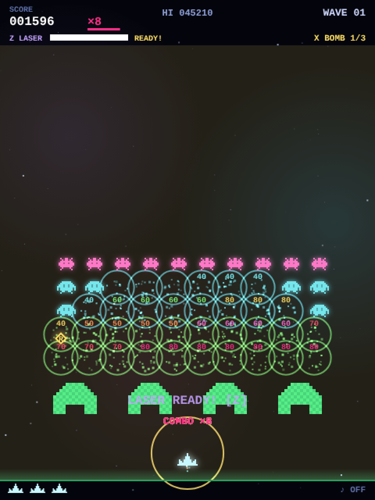
671const special = { charge: 0, laserT: 0, laserW: 0, laserDps: 0, bombs: 2, bombT: 0 };charge— the laser gauge (0–100)laserT— seconds of laser left; the beam exists while this is above zerolaserW/laserDps— width and damage per second of the current shotbombs/bombT— bombs in stock, and the flash timer after using one
Charging the gauge
842function gainCharge(n) {
843 if (special.laserT > 0) return; // レーザー自身の撃破では再充電しない。
844 const before = special.charge;
845 special.charge = Math.min(LASER_MAX, special.charge + n);
846 if (before < LASER_MAX && special.charge === LASER_MAX) {
847 popup(W / 2, PLAYER_Y - 60, "LASER READY! [Z]", BEAM_COLOR, 16);
848 sfx.pickup();
849 }
850}An alien kill gives 6, the saucer 15, and each normal shot on the boss 1.5 × the damage dealt. Comparing with before (the value before adding) makes “LASER READY!” appear exactly once, the moment the gauge fills.
Kills made by the laser itself do not recharge it (laserT > 0 returns early), so it cannot be fired continuously.
The rules live in one place
852function canUseSpecial() { return state === "play" && !paused && player.alive && bannerT <= 0; }“Playing, not paused, alive, and the wave banner is gone.” Laser and bomb, whether triggered from the keyboard, the HTML buttons or a right click, always go through this function. With the rule in one place, a change such as “not during the upgrade screen” is a one-line edit.
The laser is a tall thin rectangle
854function activateLaser() {
855 if (!canUseSpecial() || special.charge < LASER_MAX || special.laserT > 0) return false;
856 special.charge = 0;
857 special.laserT = 1.2;
858 special.laserW = 14 + active.beam * 10 + upgrades.beam * 3;
859 special.laserDps = 20 + active.beam * 8 + upgrades.beam * 4;
860 shake = 0.18;
861 beep({ f0: 180, f1: 1800, dur: 0.7, type: "sawtooth", vol: 0.1 });
862 return true;
863}884function updateLaser(dt) {
885 if (special.laserT <= 0) return;
886 const duration = Math.min(dt, special.laserT);
887 const beam = { x: player.x - special.laserW / 2, y: 58, w: special.laserW, h: PLAYER_Y - 58 };
888 for (const a of aliens) {
889 if (!a.alive) continue;
890 const r = alienRectInto(a, SCRATCH);
891 if (hit(beam, r)) killAlien(a, r);
892 }
893 eBullets = eBullets.filter(b => !hit(beam, b));
894 if (saucer && hit(beam, saucer)) killSaucer();
895 if (boss) {
896 for (const part of boss.parts) {
897 if (part.hp > 0 && hit(beam, bossPartRect(part))) damageBossPart(part, special.laserDps * duration, "laser");
898 }
899 }
900 special.laserT = Math.max(0, special.laserT - dt);
901}The laser’s hit box is a tall thin rectangle beam from just above the ship to the top of the screen. Every frame it is tested with hit against aliens, enemy bullets, the saucer and each boss part.
Boss damage is “damage per second × seconds this frame”, so the total is the same at any frame rate.
1856function drawSpecials(t) {
1857 if (special.bombT > 0) {
1858 ctx.fillStyle = `rgba(255,224,102,${special.bombT * 0.22})`;
1859 ctx.fillRect(0, 58, W, GROUND_Y - 58);
1860 }
1861 if (special.laserT <= 0 || !player.alive) return;
1862 const width = special.laserW, x = player.x, top = 58, strip = laserStrip(width);
1863 ctx.save();
1864 ctx.globalCompositeOperation = "lighter";
1865 drawLaserColumn(strip, x, top, PLAYER_Y);
1866 ctx.shadowColor = BEAM_COLOR; ctx.shadowBlur = LASER_BLUR;
1867 ctx.strokeStyle = "#e5cdff"; ctx.lineWidth = 3;
1868 for (let i = 0; i < active.beam; i++) {
1869 ctx.beginPath(); ctx.moveTo(x + BEAM_OFFSETS[i], PLAYER_Y - 4);
1870 ctx.lineTo(x, PLAYER_Y - 44); ctx.stroke();
1871 }
1872 ctx.restore();
1873}The beam is three layers: a translucent purple halo, a denser purple body, and a white core. shadowBlur softens the edges and "lighter" (additive blending, chapter 17) makes the background look burnt bright.
Applying shadowBlur to a rectangle as tall as the screen every frame is expensive, though, so laserStrip pre-renders a short column once per width (prerender, chapter 05) and drawLaserColumn stretches it into place.
586// 合体レーザーの光彩付きの柱。幅ごとに一度だけ短い柱を描いておき、上下の端(光彩のはみ出し)はそのまま、
587// 中央の帯だけを縦に引き伸ばして任意の長さにする。
588const LASER_BLUR = 20, LASER_CAP = 70, LASER_BAND = 20, laserStrips = new Map();
589function laserStrip(width) {
590 let strip = laserStrips.get(width);
591 if (strip) return strip;
592 const w = Math.ceil(width + 10 + LASER_BLUR * 4), h = LASER_CAP * 2 + LASER_BAND, y0 = LASER_BLUR * 2, hh = h - y0 * 2;
593 strip = prerender(w, h, g => {
594 const x = w / 2;
595 g.globalCompositeOperation = "lighter";
596 g.shadowColor = BEAM_COLOR; g.shadowBlur = LASER_BLUR;
597 g.fillStyle = "#b792ff66"; g.fillRect(x - width / 2 - 5, y0, width + 10, hh);
598 g.fillStyle = "#d2afffcc"; g.fillRect(x - width / 2, y0, width, hh);
599 g.fillStyle = "#ffffff"; g.fillRect(x - width * 0.2, y0, width * 0.4, hh);
600 });
601 laserStrips.set(width, strip);
602 return strip;
603}
604
605function drawLaserColumn(strip, cx, top, bottom) {
606 const w = strip.width, x = cx - w / 2, y0 = LASER_BLUR * 2, cap = LASER_CAP - y0;
607 ctx.drawImage(strip, 0, 0, w, LASER_CAP, x, top - y0, w, LASER_CAP);
608 ctx.drawImage(strip, 0, LASER_CAP, w, LASER_BAND, x, top + cap, w, bottom - top - cap * 2);
609 ctx.drawImage(strip, 0, LASER_CAP + LASER_BAND, w, LASER_CAP, x, bottom - cap, w, LASER_CAP);
610}The column image is pasted as three pieces: the top cap, the middle band and the bottom cap. The caps keep their soft glow spill, and only the middle band is stretched vertically to reach from the ship to the top of the screen,
so the beam looks right at any length. The width depends only on the number of linked cannons and the beam upgrade level, a dozen or so values, so the Map cache never has to redraw one.
The bomb — a circular area attack
865function activateBomb() {
866 if (!canUseSpecial() || special.bombs <= 0 || special.bombT > 0) return false;
867 special.bombs--; special.bombT = 0.65;
868 player.inv = Math.max(player.inv, 1.6);
869 eBullets = [];
870 spawnRing(player.x, PLAYER_Y, "#ffe066", BOMB_RADIUS / 0.65, 0.65);
871 shake = 0.35; boom(0.55, 0.3, 800);
872 for (const a of aliens) {
873 if (!a.alive) continue;
874 const r = alienRect(a);
875 if (Math.hypot(r.x + r.w / 2 - player.x, r.y + r.h / 2 - PLAYER_Y) <= BOMB_RADIUS) killAlien(a, r);
876 }
877 if (boss) {
878 boss.warning = 0; boss.laserT = 0; boss.attackT = 2.5;
879 for (const part of boss.parts) damageBossPart(part, 10, "bomb");
880 }
881 return true;
882}It clears every enemy bullet, kills every alien within 240 pixels of the ship, deals 10 damage to every boss part, and cancels the boss’s telegraphed attack. It also grants 1.6 seconds of invulnerability, which makes it the panic button.
Wiring the HTML buttons
1113laserButton.addEventListener("click", () => { ac(); activateLaser(); });
1114bombButton.addEventListener("click", () => { ac(); activateBomb(); });2034function refreshActionButtons() {
2035 const usable = canUseSpecial();
2036 const laserOn = usable && special.charge >= LASER_MAX && special.laserT <= 0;
2037 const bombOn = usable && special.bombs > 0 && special.bombT <= 0;
2038 const gauge = Math.floor(special.charge);
2039 const langChanged = lang !== shownButtons.lang;
2040 if (langChanged || laserOn !== shownButtons.laserOn || gauge !== shownButtons.gauge) {
2041 shownButtons.laserOn = laserOn; shownButtons.gauge = gauge;
2042 laserButton.disabled = !laserOn;
2043 laserButton.textContent = T("laserBtn", gauge >= LASER_MAX ? "READY!" : `${gauge}%`);
2044 }
2045 if (langChanged || bombOn !== shownButtons.bombOn || special.bombs !== shownButtons.bombs) {
2046 shownButtons.bombOn = bombOn; shownButtons.bombs = special.bombs;
2047 bombButton.disabled = !bombOn;
2048 bombButton.textContent = T("bombBtn", special.bombs);
2049 }
2050 shownButtons.lang = lang;
2051}refreshActionButtons runs at the start of every draw() and keeps the buttons’ enabled state and labels (“READY!”, the bomb count) in sync.
It writes to the HTML only when something changed, though: shownButtons remembers what was written last time, and identical content is skipped.
67// ボタンに直前に書いた内容。同じなら DOM に書き込まない(毎フレームの textContent 更新はレイアウト再計算を招く)。
68const shownButtons = { laserOn: null, gauge: null, bombOn: null, bombs: null, lang: null };Assigning textContent or disabled, even with the same value, tells the browser that the page layout may have changed and queues a recalculation.
Doing that every frame means that every mouse move, which calls getBoundingClientRect() (chapter 04), forces that expensive recalculation.
When syncing HTML elements outside the canvas, the rule is: write only when the value actually changed.
14Wave clear and the three-card upgrade
Wipe out the formation and, after a 1.6-second clear screen, you choose one of three cards.
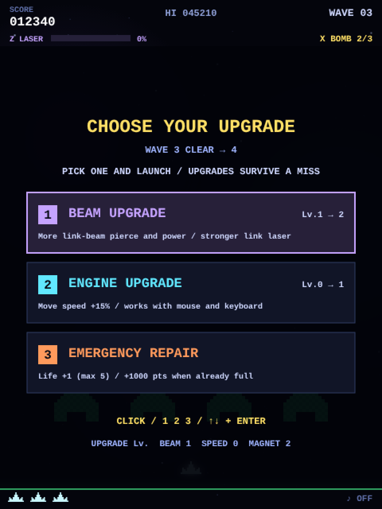
Detecting a clear
1541 // --- ウェーブクリア ---
1542 if (aliveN === 0 && !boss) {
1543 saucerSoundStop();
1544 pBullets = []; eBullets = []; powerups = [];
1545 special.laserT = 0; releaseControls();
1546 if (waveNoDamage) {
1547 perfectBonus = 500 + wave * 100;
1548 addScore(perfectBonus);
1549 sfx.perfect();
1550 } else {
1551 perfectBonus = 0;
1552 sfx.clear();
1553 }
1554 setState("clear");
1555 }aliveN === 0 && !boss. Flying aliens still count in aliveN, so a wave is not over until an alien you missed has returned to the formation and been dealt with.
waveNoDamage starts each wave as true and becomes false on a hit; if it survives, you get the perfect bonus.
Three picks without duplicates
632const UPGRADE_DEFS = {
633 beam: { color: BEAM_COLOR, max: 5 },
634 speed: { color: "#61e8ff", max: 5 },
635 magnet: { color: "#7dff7a", max: 5 },
636 repair: { color: "#ff9a5c" },
637 supply: { color: "#ffe066" },
638 charge: { color: "#ff6ad5" },
639};903function openUpgrades() {
904 const pool = Object.keys(UPGRADE_DEFS).filter(k => !UPGRADE_DEFS[k].max || upgrades[k] < UPGRADE_DEFS[k].max);
905 upgradeChoices = [];
906 while (upgradeChoices.length < 3) upgradeChoices.push(pool.splice(Math.floor(Math.random() * pool.length), 1)[0]);
907 upgradeIndex = 0;
908 releaseControls();
909 setState("upgrade");
910}pool starts with the upgrades that have not reached their cap. splice then removes a random entry from the pool, so drawing three times can never produce the same upgrade twice.
const pool = ["beam", "speed", "magnet", "repair", "supply", "charge"];
const i = Math.floor(Math.random() * pool.length); // 0..5
const picked = pool.splice(i, 1)[0]; // remove it from the pool (splice returns an array, hence [0])
// pool now has 5 entries, so picked can never come up againChoosing and moving on
912function chooseUpgrade(index) {
913 if (state !== "upgrade" || paused || !upgradeChoices[index]) return false;
914 const key = upgradeChoices[index];
915 if (key in upgrades) upgrades[key]++;
916 else if (key === "repair") {
917 if (lives < 5) lives++; else addScore(1000);
918 } else if (key === "supply") {
919 special.bombs = Math.min(BOMB_MAX, special.bombs + 1); active.shield = 1; addScore(300);
920 } else if (key === "charge") {
921 special.charge = LASER_MAX; addScore(300);
922 }
923 releaseControls();
924 wave++; makeWave(); setState("play");
925 popup(W / 2, 350, upgradeText(key).name, UPGRADE_DEFS[key].color, 16);
926 sfx.pickup();
927 return true;
928}If key in upgrades (beam / speed / magnet) the level goes up by one; otherwise an instant effect is applied (a life, a bomb plus a shield, a full gauge).
Finally wave++, makeWave() and setState("play") return you to combat.
Clicking a card is a collision test
930function upgradeCardRect(index) { return { x: 34, y: 242 + index * 88, w: W - 68, h: 76 }; } 995function upgradeAtPointer(e) {
996 const r = cvs.getBoundingClientRect();
997 const point = { x: canvasX(e), y: (e.clientY - r.top) * H / r.height, w: 1, h: 1 };
998 return upgradeChoices.findIndex((_, i) => hit(point, upgradeCardRect(i)));
999}Card positions come from upgradeCardRect(i), and the click is turned into a 1 × 1 pixel rectangle so that hit can test it.
The same function that handles aliens and bullets doubles as a UI button test. findIndex returns the index of the first match, or -1.
15The battleship — boss fights
Every fifth wave. Destroy both turrets to expose the core: a boss with destructible parts.
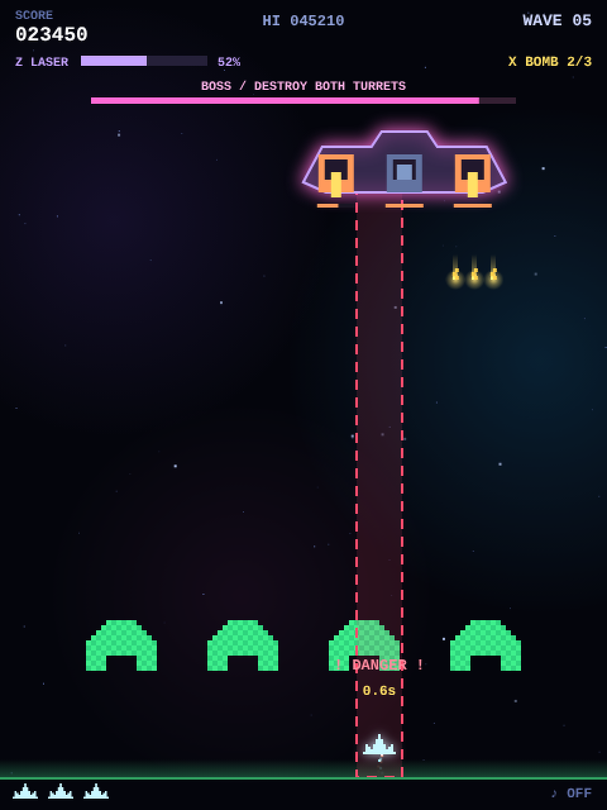
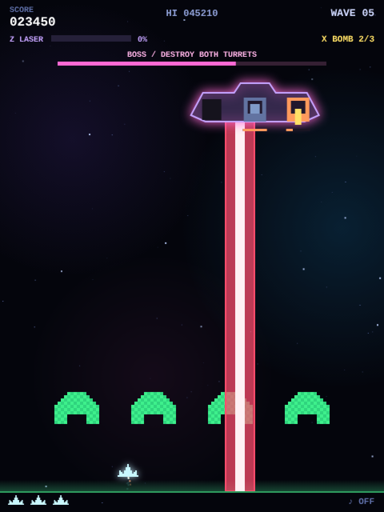
An object with three parts
934function makeBoss() {
935 const level = wave / 5;
936 boss = {
937 x: W / 2, y: 112, t: 0, attackT: 2, warning: 0, laserT: 0, targetX: W / 2,
938 parts: [
939 { kind: "gun", offset: -54, hp: 14 + level * 4, max: 14 + level * 4, flash: 0 },
940 { kind: "gun", offset: 54, hp: 14 + level * 4, max: 14 + level * 4, flash: 0 },
941 { kind: "core", offset: 0, hp: 40 + level * 16, max: 40 + level * 16, flash: 0 },
942 ],
943 };
944}The boss has a parts array: turret, turret, core. Each part has hp, max, and flash for the white flash on hit.
level = wave / 5, so on wave 5 the turrets have 18 HP and the core 56; on wave 10 it is 22 and 72 — a gradual increase.
950function coreExposed() { return boss && boss.parts.slice(0, 2).every(p => p.hp <= 0); }952function damageBossPart(part, amount, source = "shot") {
953 if (!boss || part.hp <= 0 || amount <= 0) return;
954 if (part.kind === "core" && !coreExposed()) return;
955 const r = bossPartRect(part), damage = Math.min(part.hp, amount);
956 part.hp = Math.max(0, part.hp - amount); part.flash = 0.08;
957 if (source === "shot") gainCharge(damage * 1.5);
958 if (part.hp > 0) return;
959 spawnBurst(r.x + 14, r.y + 15, "#ff9a5c", 28, 180);
960 spawnRing(r.x + 14, r.y + 15, "#ffe066", 220, 0.5);
961 addScore(part.kind === "core" ? 1000 + wave * 100 : 200);
962 boom(0.35, 0.2, 700);
963 if (part.kind === "core") {
964 boss = null; eBullets = [];
965 special.bombs = Math.min(BOMB_MAX, special.bombs + 1);
966 popup(W / 2, 205, "BOSS DOWN! / BOMB +1", "#ffe066", 18);
967 shake = 0.45;
968 } else if (coreExposed()) popup(W / 2, 205, "CORE OPEN!", "#ff6ad5", 18);
969}coreExposed() asks “are both turrets at 0 HP?”. The second line of damageBossPart rejects damage to the core until then, so the order is forced.
Destroying the core sets boss = null, which satisfies the !boss part of the clear check in the previous chapter.
The attack pattern is a small state machine
979function updateBoss(dt) {
980 if (!boss || bannerT > 0) return;
981 boss.t += dt;
982 boss.parts.forEach(p => p.flash = Math.max(0, p.flash - dt));
983 if (boss.warning > 0) {
984 boss.warning = Math.max(0, boss.warning - dt);
985 if (boss.warning === 0) {
986 boss.laserT = 0.6;
987 for (const part of boss.parts) {
988 if (part.hp <= 0 || part.kind !== "gun") continue;
989 for (const vx of [-75, 0, 75]) eBullets.push({ x: boss.x + part.offset, y: boss.y + 40, w: 3, h: 9, vx, vy: 180 + Math.min(wave * 3, 90) });
990 }
991 beep({ f0: 300, f1: 80, dur: 0.35, type: "sawtooth", vol: 0.09 });
992 }
993 } else if (boss.laserT > 0) {
994 boss.laserT = Math.max(0, boss.laserT - dt);
995 const danger = { x: boss.targetX - 18, y: boss.y + 40, w: 36, h: GROUND_Y - boss.y - 40 };
996 if (boss.laserT > 0 && player.inv <= 0 && hit(danger, playerRect())) damagePlayer();
997 } else {
998 boss.x = W / 2 + Math.sin(boss.t * 0.65) * 130;
999 boss.attackT -= dt;
1000 if (boss.attackT <= 0) {
1001 boss.targetX = clamp(player.x, 22, W - 22);
1002 boss.warning = 1.1;
1003 boss.attackT = coreExposed() ? 1.5 : 2.2;
1004 beep({ f0: 740, dur: 0.12, type: "square", vol: 0.07 });
1005 }
1006 }
1007}The three branches of the if / else if / else are the three states: telegraphing, firing, cruising. At the moment the telegraph starts, boss.targetX is locked to the player’s position,
so if you see the warning and move away, you always dodge. The promise not to be unfair is written right into the code.
Drawing the telegraph
1811 if (boss.warning > 0 || boss.laserT > 0) {
1812 const x = boss.targetX, y = boss.y + 40;
1813 ctx.fillStyle = boss.laserT > 0 ? "#ff4d6dbb" : "#ff4d6d22";
1814 ctx.fillRect(x - 18, y, 36, GROUND_Y - y);
1815 ctx.strokeStyle = "#ff4d6d"; ctx.lineWidth = 2;
1816 ctx.setLineDash(boss.warning > 0 ? DASH_WARNING : DASH_NONE);
1817 ctx.strokeRect(x - 18, y, 36, GROUND_Y - y);
1818 ctx.setLineDash(DASH_NONE);
1819 if (boss.laserT > 0) {
1820 ctx.fillStyle = "#fff0f4"; ctx.fillRect(x - 6, y, 12, GROUND_Y - y);
1821 } else {
1822 drawText("! DANGER !", clamp(x, 52, W - 52), GROUND_Y - 85, { size: 12, color: "#ff8a9e" });
1823 drawText(`${boss.warning.toFixed(1)}s`, clamp(x, 30, W - 30), GROUND_Y - 65, { size: 11, color: "#ffe066" });
1824 }
1825 }ctx.setLineDash(DASH_WARNING), that is [8, 6], means “8 on, 6 off”. Remember to reset with DASH_NONE (an empty array) afterwards, or every later line becomes dashed too.
The arrays are constants so that no new array is created every frame.
The hull is simply BOSS_HULL, pre-rendered with prerender (chapter 05) complete with its pink shadowBlur glow. Only the moving parts, the turrets and the core, are drawn every frame.
1826 ctx.drawImage(BOSS_HULL, boss.x - 80 - BOSS_HULL_PAD, boss.y - 8 - BOSS_HULL_PAD);
1827 ctx.save();
1828 ctx.translate(boss.x, boss.y);16Diving enemies — breaking out of the formation
From wave 2, some aliens telegraph and then dive at you. A pattern for giving an enemy a temporary, different behaviour.
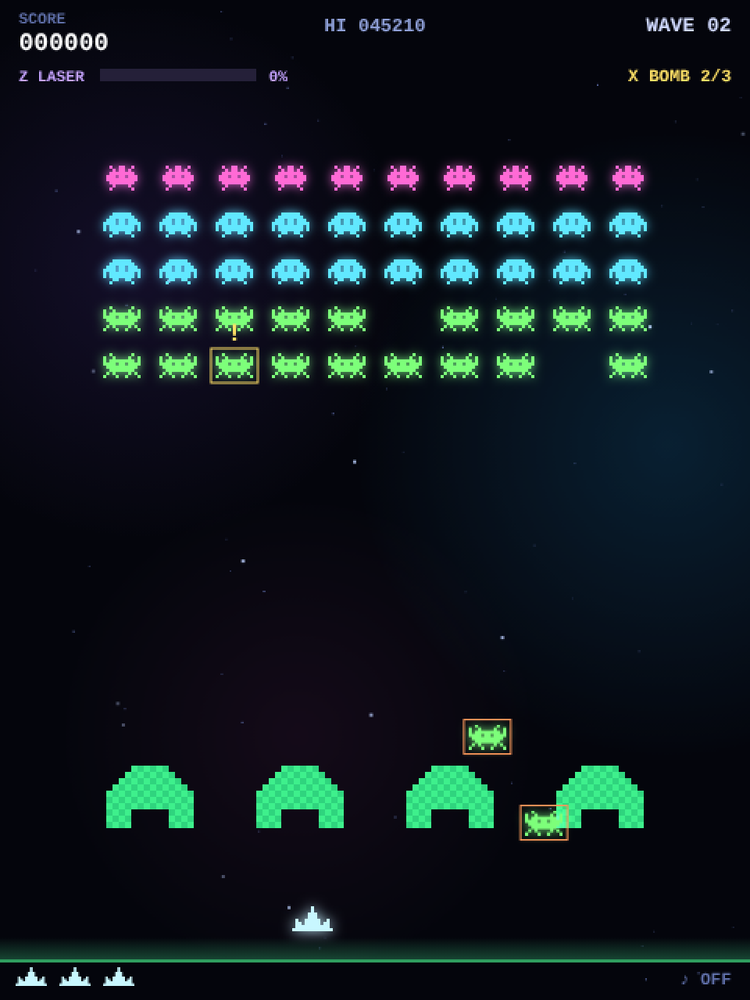
Attaching a flight to an alien
1011function launchFlight(a, mode) {
1012 const r = alienRect(a);
1013 a.flight = { x: r.x, y: r.y, startX: r.x, t: 0, warning: 0.65, mode, phase: "exit",
1014 vx: clamp((player.x - r.x) * 0.5, -90, 90), side: r.x < W / 2 ? -1 : 1 };
1015}An alien that starts a run gets an a.flight object holding its current position, elapsed time, the remaining warning time and its movement mode.
Recall from chapter 06 that alienRect says “if a.flight exists, use those coordinates”.
Because drawing and collisions both go through alienRect, attaching or removing a flight is all it takes to switch between formation and solo behaviour.
Three ways to fly
1017function updateFlights(dt) {
1018 if (wave < 2 || boss || bannerT > 0) return;
1019 flightT -= dt;
1020 if (flightT <= 0) {
1021 const candidates = aliens.filter(a => a.alive && !a.flight);
1022 if (candidates.length && aliens.filter(a => a.alive && a.flight).length < Math.min(3, 1 + Math.floor(wave / 3))) {
1023 launchFlight(candidates[Math.floor(Math.random() * candidates.length)], ["dive", "zigzag", "flank"][flightCount++ % 3]);
1024 }
1025 flightT = Math.max(2.5, 6 - wave * 0.25);
1026 }
1027 for (const a of aliens) {
1028 if (!a.alive || !a.flight) continue;
1029 const f = a.flight;
1030 if (f.warning > 0) { f.warning = Math.max(0, f.warning - dt); continue; }
1031 f.t += dt;
1032 const speed = Math.min(260, 155 + wave * 7);
1033 if (f.mode === "flank" && f.phase === "exit") {
1034 f.x += f.side * speed * dt;
1035 if (f.x < -30 || f.x > W + 30) {
1036 f.phase = "attack"; f.y = PLAYER_Y - 160;
1037 f.x = f.side < 0 ? -28 : W + 4;
1038 }
1039 } else {
1040 f.y += speed * dt;
1041 if (f.mode === "zigzag") f.x = clamp(f.startX + Math.sin(f.t * 5) * 54, 5, W - 29);
1042 else f.x += (f.mode === "flank" ? -f.side * speed * 1.5 : f.vx) * dt;
1043 if (player.alive && player.inv <= 0 && hit(alienRect(a), playerRect())) damagePlayer();
1044 if (f.y > GROUND_Y + 24 || f.x < -60 || f.x > W + 60) a.flight = null;
1045 }
1046 if (state !== "play") return;
1047 }
1048}- Launch interval
flightTshrinks as waves progress (minimum 2.5 s). The number of simultaneous flyers grows by one every three waves, up to three. - Telegraph: for the 0.65 s of
warningthe alien stays put and only shows “!” and a yellow box (continueskips the rest). - flank alone has two phases (
phase). It first runs sideways off its own side of the screen (sideis -1 for the left half, +1 for the right), then reappears low on the same side (160 pixels above the ship) and sweeps diagonally across towards the other side. - Off screen means
a.flight = null, which puts it back at its row and column. A flyer you miss does not reduce the count, so the wave goes on.
Math.sin(t) swings smoothly between -1 and 1 as t grows. sin(t * 5) * 54 means “five times as fast, ±54 pixels”.
The boss’s sway Math.sin(boss.t * 0.65) * 130, the drifting nebulae and the pulsing capsules all use the same trick.
17Effects — the anatomy of neon
Particles, shockwaves, floating text, additive blending, screen shake. Behind the flash, each one is a few lines.
Three kinds of throwaway objects
1052function spawnBurst(x, y, color, n = 12, sp = 110) {
1053 for (let i = 0; i < n; i++) {
1054 const a = Math.random() * Math.PI * 2, v = sp * rand(0.35, 1);
1055 particles.push({
1056 x, y, vx: Math.cos(a) * v, vy: Math.sin(a) * v,
1057 life: rand(0.3, 0.7), max: 0.7, color, size: Math.random() < 0.3 ? 3 : 2,
1058 });
1059 }
1060}1062function spawnRing(x, y, color, vr = 150, life = 0.35) {
1063 rings.push({ x, y, r: 3, vr, life, max: life, color });
1064}1066function popup(x, y, txt, color, size = 12) {
1067 popups.push({ x, y, txt, color, size, life: 1 });
1068}A particle gets a random angle a and speed v, split into x and y velocities with cos / sin.
Each object has a life that counts down every frame; at zero it is removed from its array.
1311// 末尾の要素と入れ替えて削除する。splice の詰め直し(O(n))を避ける。
1312// パーティクルとリングは加算合成で描くので順序が変わっても見た目は同じ。
1313function removeAt(arr, i) {
1314 const last = arr.pop();
1315 if (i < arr.length) arr[i] = last;
1316}
1317
1318function updateCommon(dt) {
1319 for (const layer of starLayers) {
1320 for (const s of layer) {
1321 s.y += s.sp * dt;
1322 if (s.y > H) { s.y = -2; s.x = Math.random() * W; }
1323 }
1324 }
1325 for (let i = particles.length - 1; i >= 0; i--) {
1326 const p = particles[i];
1327 p.x += p.vx * dt; p.y += p.vy * dt; p.vy += 160 * dt; p.life -= dt;
1328 if (p.life <= 0) removeAt(particles, i);
1329 }
1330 for (let i = rings.length - 1; i >= 0; i--) {
1331 const r = rings[i];
1332 r.r += r.vr * dt; r.life -= dt;
1333 if (r.life <= 0) removeAt(rings, i);
1334 }
1335 for (let i = popups.length - 1; i >= 0; i--) {
1336 const p = popups[i];
1337 p.y -= 22 * dt; p.life -= dt * 0.9;
1338 if (p.life <= 0) popups.splice(i, 1);
1339 }
1340 shake = Math.max(0, shake - dt * 1.2);
1341 scoreShown += (score - scoreShown) * Math.min(1, dt * 12);
1342 if (Math.abs(score - scoreShown) < 1) scoreShown = score;
1343 if (state === "play" || state === "dying" || state === "clear") {
1344 combo.t -= dt;
1345 if (combo.t <= 0 && combo.n > 0) resetCombo();
1346 }
1347}The particle line p.vy += 160 * dt is gravity: fragments that fly upward eventually fall back, which gives explosions weight.
On the drawing side, ctx.globalAlpha = p.life / p.max fades each particle out as its life runs out.
removeAt, used for removal, moves the last element into the slot being freed and pops. Unlike splice it never shifts the elements after it, so hundreds of particles stay cheap.
The order changes, but particles and rings are drawn additively (next section), where order makes no visible difference.
Light is layered with additive blending
1668function drawGlowPass(t) {
1669 ctx.globalCompositeOperation = "lighter";
1670
1671 refreshFormLayer();
1672 blitFormLayer(formLayer.glow);
1673 for (const a of aliens) {
1674 if (!a.alive || !a.flight) continue;
1675 const gl = TYPES[a.type].glow[form.anim];
1676 ctx.drawImage(gl.img, a.flight.x - gl.pad, a.flight.y - gl.pad);
1677 }
1678
1679 if (saucer) ctx.drawImage(SAUCER_GLOW.img, saucer.x - SAUCER_GLOW.pad, saucer.y - SAUCER_GLOW.pad);ctx.globalCompositeOperation = "lighter" switches to “add the colours together”. In the normal mode (source-over) the top colour hides what is below;
in lighter, overlapping colours get brighter and tend towards white. It is indispensable for neon and fire. drawGlowPass draws every glow layer first in this mode,
and the crisp sprites are drawn on top afterwards in the normal mode.
The same three glowing dots, drawn normally on the left and additively on the right.
The formation is drawn as one image
Drawing fifty aliens one by one costs up to a hundred drawImage calls per frame (glow plus body). Since the formation moves as a block,
the bodies and the glows are each drawn once into an off-screen canvas, and every frame just pastes those two images at form.ox, form.oy.
1624/* 編隊レイヤー: 編隊は一体で動くので、スプライトと光彩をそれぞれ 1 枚の画像にまとめておき、
1625 生存状況かアニメ番号が変わった時だけ描き直す。毎フレームの drawImage が最大 100 回 → 2 回になる。 */
1626const FORM_PAD = 12; // 光彩のはみ出し分(withGlow の pad = 9 より大きく)
1627const FORM_W = COLS * CELL_W + FORM_PAD * 2, FORM_H = ROWS * CELL_H + FORM_PAD * 2;
1628const formLayer = { key: NaN, list: null, empty: true, sprite: null, glow: null, sg: null, gg: null, sx: 0, sy: 0, sw: 0, sh: 0 };
1629formLayer.sprite = prerender(FORM_W, FORM_H, g => { formLayer.sg = g; });
1630formLayer.glow = prerender(FORM_W, FORM_H, g => { formLayer.gg = g; g.globalCompositeOperation = "lighter"; });
1631
1632function formationKey() {
1633 // アニメ番号と「生存かつ編隊内」のビット列を 1 つの整数にまとめる(50 体 + 先頭ビットで 2^53 に収まる)。
1634 let key = form.anim + 2;
1635 for (const a of aliens) key = key * 2 + (a.alive && !a.flight ? 1 : 0);
1636 return key;
1637}
1638
1639function refreshFormLayer() {
1640 const key = formationKey();
1641 if (key === formLayer.key && aliens === formLayer.list) return;
1642 formLayer.key = key; formLayer.list = aliens; formLayer.empty = true;
1643 const sg = formLayer.sg, gg = formLayer.gg;
1644 sg.clearRect(0, 0, FORM_W, FORM_H);
1645 gg.clearRect(0, 0, FORM_W, FORM_H);
1646 let x0 = Infinity, y0 = Infinity, x1 = -Infinity, y1 = -Infinity;
1647 for (const a of aliens) {
1648 if (!a.alive || a.flight) continue;
1649 const ty = TYPES[a.type], gl = ty.glow[form.anim];
1650 const x = a.c * CELL_W + (CELL_W - ty.w) / 2 + FORM_PAD, y = a.r * CELL_H + FORM_PAD;
1651 sg.drawImage(ty.img[form.anim], x, y);
1652 gg.drawImage(gl.img, x - gl.pad, y - gl.pad);
1653 // 光彩はスプライトを内包するので、光彩の範囲が描いた領域の外接矩形になる。
1654 x0 = Math.min(x0, x - gl.pad); y0 = Math.min(y0, y - gl.pad);
1655 x1 = Math.max(x1, x - gl.pad + gl.img.width); y1 = Math.max(y1, y - gl.pad + gl.img.height);
1656 formLayer.empty = false;
1657 }
1658 formLayer.sx = x0; formLayer.sy = y0; formLayer.sw = x1 - x0; formLayer.sh = y1 - y0;
1659}
1660
1661// レイヤーのうち、生存エイリアンが描かれている範囲だけを転送する(残りが少ないほど安くなる)。
1662function blitFormLayer(img) {
1663 if (formLayer.empty) return;
1664 const { sx, sy, sw, sh } = formLayer;
1665 ctx.drawImage(img, sx, sy, sw, sh, form.ox - FORM_PAD + sx, form.oy - FORM_PAD + sy, sw, sh);
1666}formationKey() packs the animation frame and “which aliens are alive and in formation” into one integer, a fingerprint of what the layer should show. If it matches the previous one, nothing needs redrawing.
A kill or a step of the walk animation changes the number, and only then does refreshFormLayer repaint the two canvases.
blitFormLayer copies just the bounding box of the survivors, so the fewer aliens remain, the cheaper it gets. Flying aliens leave the block, so they are still drawn individually.
1899 blitFormLayer(formLayer.sprite);
1900 for (const a of aliens) {
1901 if (!a.alive || !a.flight) continue;
1902 const ty = TYPES[a.type], f = a.flight, warn = f.warning > 0;
1903 ctx.drawImage(ty.img[form.anim], f.x, f.y);
1904 ctx.strokeStyle = warn ? "#ffe066" : "#ff9a5c"; ctx.lineWidth = 1;
1905 ctx.strokeRect(f.x - 3, f.y - 3, ty.w + 6, ty.h + 6);
1906 if (warn) drawText("!", f.x + ty.w / 2, f.y - 8, { size: 16, color: "#ffe066" });
1907 }Shake and hit stop
2059 if (shake > 0) ctx.translate(rand(-1, 1) * shake * 10, rand(-1, 1) * shake * 10);1350 if (freezeT > 0) { freezeT -= dt; return; } // キル時の一瞬のヒットストップshake is set to 0.5 on a hit, 0.35 for a bomb and so on, and updateCommon reduces it by 1.2 per second.
freezeT is set to 0.025 s on every kill; while it is positive, updatePlay is skipped entirely. The screen is still drawn, so time appears to stop.
Both are a few lines, and both contribute enormously to how the game feels.
Background — three layers of stars and nebulae
676const starLayers = [0, 1, 2].map(l => Array.from({ length: [36, 26, 14][l] }, () => ({
677 x: Math.random() * W, y: Math.random() * H,
678 sp: [6, 14, 26][l], size: l === 2 ? 2 : 1,
679 tw: Math.random() * 6.28,
680})));1575// 星雲はごくゆっくりしか動かないので、15fps で描き直した 1 枚の画像を毎フレーム貼る
1576// (半透明の加算合成 3 回 → 不透明なコピー 1 回)。
1577const SKY_INTERVAL = 1 / 15;
1578const sky = { img: null, g: null, t: -Infinity };
1579sky.img = prerender(W, H, g => { sky.g = g; }, { alpha: false });
1580
1581function refreshSky(t) {
1582 if (t - sky.t < SKY_INTERVAL) return;
1583 sky.t = t;
1584 const g = sky.g;
1585 g.globalCompositeOperation = "source-over";
1586 g.fillStyle = "#04050c"; g.fillRect(0, 0, W, H);
1587 g.globalCompositeOperation = "lighter";
1588 for (const n of NEBULAE) {
1589 const ox = Math.sin(t * 0.11 + n.ph) * n.dx;
1590 const oy = Math.cos(t * 0.13 + n.ph) * n.dy;
1591 g.globalAlpha = 0.5 + 0.25 * Math.sin(t * 0.3 + n.ph);
1592 g.drawImage(n.img, n.x + ox - n.img.width / 2, n.y + oy - n.img.height / 2);
1593 }
1594 g.globalAlpha = 1;
1595 g.globalCompositeOperation = "source-over";
1596}
1597
1598function drawBackground(t) {
1599 refreshSky(t);
1600 ctx.drawImage(sky.img, 0, 0);
1601
1602 starLayers.forEach((layer, l) => {
1603 ctx.fillStyle = STAR_COLORS[l];
1604 for (const s of layer) {
1605 ctx.globalAlpha = 0.35 + 0.55 * (0.5 + 0.5 * Math.sin(t * 2 + s.tw));
1606 ctx.fillRect(s.x, s.y, s.size, s.size);
1607 }
1608 });
1609 ctx.globalAlpha = 1;
1610}Giving each layer a different falling speed creates depth (parallax). The nebulae are three large gradient images drifting slowly on sin / cos curves, blended additively.
Blending three big translucent images is too much to repeat every frame, so refreshSky redraws them into sky.img, a screen-sized canvas, only every 1/15 s, and each frame pastes that one image. The nebulae move so slowly that 15 fps is indistinguishable.
Star twinkle is Math.sin(t * 2 + s.tw); tw is a random phase per star, so they twinkle out of step. The colour is set once per layer from STAR_COLORS.
18Sound — no audio files
Sound effects and music alike are built from waveforms with the Web Audio API. There is not one mp3.
Web Audio in one picture
You wire “nodes” together like a modular synthesizer. The top row is the bleep (beep), the bottom row is the explosion (boom).
187function ac() {
188 if (!actx) actx = new (window.AudioContext || window.webkitAudioContext)();
189 if (actx.state === "suspended") actx.resume();
190 return actx;
191}Browsers forbid pages from making noise on their own. An AudioContext has to be created (or resume()d) inside a click or key event.
That is why ac() is called at the start of the pointerdown and keydown handlers.
beep — the building block of every bleep
193function beep({ f0 = 440, f1 = f0, dur = 0.1, type = "square", vol = 0.12, delay = 0 }) {
194 if (muted) return;
195 try {
196 const a = ac(), t = a.currentTime + delay;
197 const o = a.createOscillator(), g = a.createGain();
198 o.type = type;
199 o.frequency.setValueAtTime(f0, t);
200 o.frequency.exponentialRampToValueAtTime(Math.max(f1, 1), t + dur);
201 g.gain.setValueAtTime(vol, t);
202 g.gain.exponentialRampToValueAtTime(0.0001, t + dur);
203 o.connect(g).connect(a.destination);
204 o.start(t); o.stop(t + dur + 0.02);
205 } catch (e) {}
206}o.type— the waveform.squaresounds like an 8-bit console,triangleis softer,sawtoothis buzzy.- Sliding
frequencyfromf0tof1withexponentialRampToValueAtTimegives the “pew” pitch drop. The shot is 900 Hz → 240 Hz. - Ramping
gainfromvoldown to 0.0001 is the volume envelope. Cutting a sound off abruptly clicks, so it always fades smoothly to zero.
boom — an explosion made of noise
208function boom(dur = 0.35, vol = 0.25, fc = 700) {
209 if (muted) return;
210 try {
211 // 共有ノイズバッファを再生し、減衰はゲインで付ける(以前は呼ぶたびに乱数でバッファを作っていた)。
212 const a = ac(), t = a.currentTime;
213 const n = a.createBufferSource(); n.buffer = ensureNoise(a); n.loop = true;
214 const f = a.createBiquadFilter(); f.type = "lowpass"; f.frequency.value = fc;
215 const g = a.createGain();
216 g.gain.setValueAtTime(vol, t);
217 g.gain.linearRampToValueAtTime(0, t + dur);
218 n.connect(f); f.connect(g); g.connect(a.destination);
219 n.start(t); n.stop(t + dur);
220 } catch (e) {}
221}White noise is an empty audio buffer from createBuffer filled with Math.random() values between -1 and 1. ensureNoise builds one second of it, once, and the sound effects share it with the music.
boom plays that buffer, ramps gain from vol down to 0 with linearRampToValueAtTime so the sound fades over time, and a lowpass filter muffles it into a “boom”.
Because no buffer is generated per explosion, a long combo of overlapping hits costs nothing extra.
273let noiseBuf = null;
274
275function ensureNoise(a) { // 効果音と BGM で共有する 1 秒分のホワイトノイズ
276 if (noiseBuf) return noiseBuf;
277 const len = a.sampleRate | 0;
278 noiseBuf = a.createBuffer(1, len, a.sampleRate);
279 const d = noiseBuf.getChannelData(0);
280 for (let i = 0; i < len; i++) d[i] = Math.random() * 2 - 1;
281 return noiseBuf;
282}The sound-effect table
250const sfx = {
251 shoot: () => beep({ f0: 900, f1: 240, dur: 0.09, type: "square", vol: 0.09 }),
252 beam: () => beep({ f0: 1500, f1: 360, dur: 0.13, type: "triangle", vol: 0.08 }),
253 alien: () => { boom(0.14, 0.15, 1300); beep({ f0: 320, f1: 60, dur: 0.1, type: "sawtooth", vol: 0.08 }); },
254 player: () => { boom(0.55, 0.3, 500); beep({ f0: 220, f1: 40, dur: 0.45, type: "sawtooth", vol: 0.14 }); },
255 spark: () => beep({ f0: 1300, f1: 500, dur: 0.05, type: "square", vol: 0.06 }),
256 saucerKill: () => [660, 880, 1150].forEach((f, i) => beep({ f0: f, dur: 0.09, type: "square", vol: 0.11, delay: i * 0.07 })),
257 oneUp: () => [523, 659, 784, 1046].forEach((f, i) => beep({ f0: f, dur: 0.09, type: "triangle", vol: 0.13, delay: i * 0.08 })),
258 clear: () => [392, 523, 659, 784].forEach((f, i) => beep({ f0: f, dur: 0.11, type: "square", vol: 0.1, delay: i * 0.09 })),
259 perfect: () => [660, 880, 990, 1320].forEach((f, i) => beep({ f0: f, dur: 0.1, type: "triangle", vol: 0.12, delay: i * 0.07 })),
260 over: () => beep({ f0: 300, f1: 70, dur: 0.9, type: "triangle", vol: 0.14 }),
261 step: alt => beep({ f0: alt ? 84 : 66, dur: 0.06, type: "square", vol: 0.045 }),
262 tier: m => beep({ f0: 420 + m * 90, f1: 780 + m * 90, dur: 0.09, type: "square", vol: 0.1 }),
263 pickup: () => [740, 1180].forEach((f, i) => beep({ f0: f, dur: 0.07, type: "square", vol: 0.11, delay: i * 0.06 })),
264 shieldBreak: () => { boom(0.25, 0.2, 900); beep({ f0: 900, f1: 200, dur: 0.22, type: "sawtooth", vol: 0.1 }); },
265};oneUp and clear loop over an array of frequencies with forEach, delaying each note by i * 0.08 seconds or so — an arpeggio.
Played with the same beep / boom as the game (mind your volume).
Music — a 32-step sequencer
269const music = { timer: null, next: 0, step: 0 };
270const BPM = 112, MSTEP = 60 / BPM / 2; // 8分音符
271const CHORDS = [110, 87.31, 130.81, 98]; // A2 F2 C3 G2
272const LEADS = [440, 349.23, 523.25, 392];316function scheduleStep(i, t) {
317 const bar = (i >> 3) & 3;
318 const inPlay = state === "play" || state === "dying" || state === "clear";
319 mnote("sawtooth", CHORDS[bar] * (i % 2 ? 2 : 1), null, t, MSTEP * 0.9, 0.04, 520);
320 if (i % 4 === 0) mnote("sine", 130, 44, t, 0.11, inPlay ? 0.1 : 0.06);
321 if (inPlay) {
322 if (i % 2 === 1) mnoise(t, 0.03, 0.015, "highpass", 7000);
323 if (i % 8 === 4) mnoise(t, 0.1, 0.03, "bandpass", 1900);
324 if (i % 4 === 2) mnote("triangle", LEADS[bar] * ((i >> 3) % 2 ? 1 : 0.5), null, t, MSTEP * 1.6, 0.026);
325 }
326}One step is an eighth note. As i runs from 0 to 31, (i >> 3) & 3 (divide by 8, then modulo 4) selects one of four bars of chords.
The bass plays on every step (an octave up on odd steps), the kick on every fourth, and during play a hi-hat, snare and lead join in to raise the energy.
328function musicTick() {
329 if (!actx) return;
330 while (music.next < actx.currentTime + 0.16) {
331 if (music.next < actx.currentTime) music.next = actx.currentTime + 0.05;
332 scheduleStep(music.step, music.next);
333 music.step = (music.step + 1) % 32;
334 music.next += MSTEP;
335 }
336}337function musicStart() {
338 if (music.timer || muted || !actx) return;
339 music.next = actx.currentTime + 0.06;
340 music.timer = setInterval(musicTick, 50);
341}setInterval can be tens of milliseconds late, so triggering notes directly from it would make the rhythm wobble.
Instead, every 50 ms the code wakes up and schedules every note due within the next 0.16 s, using Web Audio’s precise clock currentTime.
Web Audio plays them at exactly the right moment regardless of timer jitter. This is the standard recipe for music in Web Audio.
Bonus — the saucer’s warble
224function saucerSoundStart() {
225 if (muted || saucerOsc) return;
226 try {
227 const a = ac();
228 const o = a.createOscillator(), g = a.createGain();
229 const l = a.createOscillator(), lg = a.createGain();
230 o.type = "triangle"; o.frequency.value = 520;
231 l.type = "sine"; l.frequency.value = 9;
232 lg.gain.value = 90;
233 l.connect(lg); lg.connect(o.frequency);
234 g.gain.value = 0.04;
235 o.connect(g); g.connect(a.destination);
236 o.start(); l.start();
237 saucerOsc = { o, l, g };
238 } catch (e) {}
239}A slow 9 Hz oscillator l is connected to the frequency of the audible oscillator o. That is an LFO (low-frequency oscillator):
the pitch wobbles nine times a second, which is vibrato. “Using a sound to modulate a sound” is a basic synthesizer technique.
19Japanese / English switching
Keep every string in one table and look it up right before display: the simplest reliable approach to localization.
81const STRINGS = {
82 ja: {
83 hint: [
84 "マウス移動: 自機を操作 ／ クリック（長押しで連射）: ショット ／ 落ちてくるカプセルでパワーアップ",
85 "W: 3方向ショット R: 連射強化 S: シールド B: ビーム砲連結（最大4門）",
86 "Z / 右クリック: 合体レーザー X: ボム 強化選択: 1・2・3 / クリック",
87 "P: ポーズ ／ M: サウンド切替 ／ ← → ＋ スペースでも操作可",
88 ],
89 laserBtn: gauge => `Z 合体レーザー ${gauge}`,
90 bombBtn: n => `X ボム ×${n}`,STRINGS.ja and STRINGS.en hold the same keys. Strings that embed a number, such as “LINK LASER 64%”, are stored as functions and called with arguments at display time.
164function T(key, ...args) {
165 const v = STRINGS[lang][key];
166 return typeof v === "function" ? v(...args) : v;
167}T("titleStart") returns the string as is; T("laserBtn", "64%") calls the function and returns its result. The caller never needs to know which kind it is.
Choosing the initial language
152function detectLang() {
153 try {
154 const saved = localStorage.getItem(LANG_KEY);
155 if (Object.hasOwn(STRINGS, saved)) return saved;
156 } catch (e) {}
157 const tag = typeof navigator !== "undefined" ? String(navigator.language || "") : "";
158 return tag.toLowerCase().startsWith("ja") ? "ja" : "en";
159}Priority: the previously saved choice → the browser’s language setting → English. navigator.language is a tag such as "ja-JP", hence startsWith("ja").
Applying a switch
49 <div class="lang" role="group" aria-label="Language / 言語">
50 <button id="langJa" type="button" aria-pressed="true">日本語</button>
51 <button id="langEn" type="button" aria-pressed="false">ENGLISH</button>
52 </div>1118function applyLang(next) {
1119 if (next && next !== lang) {
1120 lang = next;
1121 try { localStorage.setItem(LANG_KEY, lang); } catch (e) {}
1122 }
1123 if (document.documentElement) document.documentElement.lang = lang;
1124 const hintEl = document.getElementById("hint");
1125 if (hintEl) hintEl.innerHTML = T("hint").join("<br>");
1126 for (const code in langButtons) langButtons[code].setAttribute("aria-pressed", String(code === lang));
1127 refreshActionButtons();
1128 redrawIfPaused();
1129}On a switch, the code updates the document’s lang attribute, the hint text, the buttons’ aria-pressed (which one is selected; the CSS colours it too) and the special-attack button labels.
Text on the canvas is redrawn every frame, so changing the lang variable is enough for it to switch from the next frame on.
The final redrawIfPaused() covers the case where the loop is stopped because the game is paused (chapter 02): it paints a single frame so that the pause screen switches too.
20Tests — checking the game without a browser
The tests/ folder holds 26 automated tests that verify the rules using nothing but Node.js.
Running the production code in Node
5const html = readFileSync(join(__dirname, "..", "..", "index.html"), "utf8");
6const source = html.match(/<script>([\s\S]*?)<\/script>/)[1];24 const context = vm.createContext({
25 document: { getElementById: id => elements[id] || mainCanvas, createElement: canvas, addEventListener: listen,
26 documentElement: {} },
27 window: { addEventListener: listen, AudioContext: class { state = "running"; } },
28 localStorage: { getItem: key => key.endsWith("muted") ? "1" : null, setItem: noop },
29 navigator: { language: "ja" },
30 performance: { now: () => 0 },
31 requestAnimationFrame: noop,
32 });
33 vm.runInContext(source, context);Node.js has no document, no canvas and no AudioContext. So the helper builds fakes full of “do nothing” functions and runs the game code inside that world with vm.runInContext.
Drawing and sound become no-ops, but every rule calculation is the real thing.
For the same reason you could type lives = 9 in the console in chapter 00, a test can read and write internals with run("special.charge").
“Everything global” is avoided in large codebases, but in a small single-file game it buys real testability.
An example — the bomb’s specification
50test("a bomb clears bullets, destroys nearby enemies, preserves distant enemies and cover, and grants invulnerability", () => {
51 const run = game();
52 run(`
53 aliens[0].flight = { x: player.x, y: PLAYER_Y - 80 };
54 const cover = JSON.stringify(barriers);
55 eBullets = [{ x: player.x, y: PLAYER_Y, w: 3, h: 9, vy: 0 }];
56 `);
57 assert.equal(run("activateBomb()"), true);
58 assert.equal(run("special.bombs"), 1);
59 assert.equal(run("eBullets.length"), 0);
60 assert.equal(run("aliens[0].alive"), false);
61 assert.equal(run("aliens[1].alive"), true);
62 assert.equal(run("JSON.stringify(barriers) === cover"), true);
63 assert.ok(run("player.inv > 1"));
64 assert.equal(run("activateBomb()"), false);
65});“Enemy bullets vanish”, “nearby enemies die”, “distant enemies and the barriers survive”, “you get invulnerability”, “it cannot be chained”. Read the test and you are reading the bomb’s spec. Tests are documentation that runs.
Running them
node --test tests/*.test.cjs
# ✔ kills fill a capped laser gauge; ... (abridged)
# ℹ tests 26
# ℹ pass 26
# ℹ fail 0The tests use node:test, which ships with Node.js 20 and later, so nothing needs installing. Get into the habit of running them after every change to make sure nothing broke.
21Modding ideas — make it your game
After reading comes rewriting. Here is where to look, from the smallest changes up.
1. Tweak the numbers — a cheat sheet of constants
| What you want to change | Where | Current value |
|---|---|---|
| Ship speed | const speed = 340 * ... in updatePlay() | 340 px/s |
| Bullet speed | p.y -= 470 * dt in updatePlay() | 470 px/s |
| Fire interval | const cd = active.rapid > 0 ? 0.12 : 0.27 | 0.27 s (0.12 with rapid fire) |
| Player bullets on screen | const maxB = ... ? 12 : 3 | 3 (12 with a power-up) |
| Enemy bullets on screen | const maxEB = Math.min(7, 2 + wave) | wave + 2, at most 7 |
| Formation speed and acceleration | formSpeed() | 16–240 px/s |
| Drop per bounce | DROP | 14 px |
| Points per extra life | LIFE_STEP | every 5000 |
| Combo window | COMBO_WINDOW | 2.2 s |
| Capsule drop rate | Math.random() > 0.08 in maybeDrop() | 8 % |
| Bomb radius | BOMB_RADIUS | 240 px |
| Boss HP | 14 + level * 4 / 40 + level * 16 in makeBoss() | turrets 18 / core 56 (wave 5) |
| Boss frequency | wave % 5 === 0 in makeWave() | every 5 waves |
Set DROP to 40 and the formation bears down on you after two or three bounces. Change the 3 in maxB to 30 and you have a bullet hose.
One number can transform how the game feels — try it and see.
2. Redraw the enemies
Just edit the pixel art in TYPES (chapter 05). Paste a pattern from the sprite workshop. Keep both frames the same size; the colour is color and the points are pts.
3. Add a power-up
As an example, “T: enemy bullets move slowly for five seconds”. Five places to touch.
// 1) One line in PU_DEFS. label is the letter shown on the capsule, dur the duration in seconds
slow: { label: "T", color: "#ffffff", dur: 5, name: "SLOW!" },
// 2) A slot for the remaining time in active (also add active.slow = 0 to the reset in startGame())
const active = { wide: 0, rapid: 0, shield: 0, beam: 0, slow: 0 };
// 3) Count it down every frame in updatePlay(), next to active.wide and active.rapid
active.slow = Math.max(0, active.slow - dt);
// 4) The effect: in the "--- 敵弾 ---" (enemy bullets) block, scale the movement to 40 %
b.y += b.vy * dt * (active.slow > 0 ? 0.4 : 1);
// 5) Show a timer bar in the HUD: just add "slow" to the array in drawHud()
for (const k of ["wide", "rapid", "slow"]) {The capsule lottery (maybeDrop) picks from Object.keys(PU_DEFS), so a new definition starts dropping automatically.
The pickup code (applyPU) already has a generic branch, “if it has a dur, set the remaining time”.
Separate the data (the table) from the code and adding a feature becomes “add a row”. This game does it in several places.
4. Add a sound
// Loop over an array of frequencies with a small delay each and you have a short melody
levelUp: () => [392, 494, 587, 784].forEach((f, i) => beep({ f0: f, dur: 0.1, type: "triangle", vol: 0.12, delay: i * 0.08 })),
// caller
sfx.levelUp();Use the sound lab to try waveforms and frequencies until you find the one you like.
5. Add an upgrade card
// 1) UPGRADE_DEFS (without max it can be offered any number of times)
bonus: { color: "#ffffff" },
// 2) A name and description in the upgrades table of both STRINGS.ja and STRINGS.en
bonus: { name: "宝物庫", detail: "スコア +2000" },
bonus: { name: "TREASURY", detail: "Score +2000" },
// 3) The effect in chooseUpgrade()
} else if (key === "bonus") {
addScore(2000);
}6. Console commands for developers
Type these in the F12 console during play to jump straight to the situation you want to check.
| Goal | Type in the console |
|---|---|
| See the boss right away | startGame(); wave = 5; makeWave() |
| Make the laser available now | special.charge = 100 |
| Fill up on bombs | special.bombs = 3 |
| Attach four beam cannons | applyPU("beam"); applyPU("beam") |
| Max out movement speed | upgrades.speed = 5 |
| More lives | lives = 9 |
| Clear the current wave instantly | aliens.forEach(a => a.alive = false); aliveN = 0 |
| Toggle sound | toggleMute() |
After a change, run the tests from chapter 20 to be sure nothing broke by accident. Adding a test for your new feature is even better.
Further reading
- MDN — Canvas tutorial (the drawing basics, end to end)
- MDN — Web Audio API (how nodes connect, what each one does)
- MDN — 2D collision detection (rectangles and circles)
- MDN — requestAnimationFrame
- MDN — localStorage
22Glossary
The terms used in this guide, in one place. Come back here whenever you forget one.
| Term | Meaning | Ch. |
|---|---|---|
| Canvas 2D | An HTML element (and its API) that JavaScript can draw rectangles, images and text on. Paint cannot be moved, so every frame is repainted | 04 |
| Context (ctx) | The object returned by canvas.getContext("2d") through which all drawing commands go | 04 |
| requestAnimationFrame | Asks the browser to call a function at the next screen refresh. The foundation of the game loop | 02 |
| dt (delta time) | Seconds since the previous frame. Multiplying speeds by it makes motion independent of the frame rate | 02 |
| State machine | A design in which one variable names the current state and each state has its own behaviour and transitions | 03 15 |
| Sprite | A small moving picture in a game (a character, a bullet). Generated here from strings | 05 |
| Offscreen canvas | A canvas that is never shown; used as a factory for ready-made images | 05 |
| Pre-rendering | Doing expensive drawing (blur, gradients) once up front and just pasting the result at run time | 05 |
| AABB | Axis-Aligned Bounding Box: an overlap test between non-rotated rectangles | 06 |
| Cooldown | A waiting time that prevents something being used again immediately, e.g. player.cool | 08 |
| Invulnerability | A period after a hit or respawn during which collisions are ignored: player.inv | 09 |
| Hit stop | Freezing time very briefly when an attack lands, to add impact: freezeT | 11 17 |
| Particle | A tiny dot used in large numbers for explosions and smoke, removed when its life runs out | 17 |
| Additive blending (lighter) | A drawing mode that adds colours together; overlaps get brighter, ideal for light | 17 |
| Parallax | Moving distant layers slowly and near ones quickly to create depth | 17 |
| Telegraph | Showing where an attack will land before it does, giving the player a fair chance to dodge | 15 16 |
| Web Audio API | The browser API for synthesizing, processing and playing sound by connecting nodes | 18 |
| Oscillator | A source node that emits a steady waveform (square, triangle, …) | 18 |
| Gain / envelope | Volume, and how it changes over time. Fading smoothly to zero avoids clicks | 18 |
| LFO | Low Frequency Oscillator: an inaudibly slow wave that modulates another sound, e.g. for vibrato | 18 |
| Look-ahead | Scheduling notes slightly in advance so that timer jitter does not affect the rhythm | 18 |
| localStorage | Browser storage for strings; used for the hi-score, the language and the mute setting | 11 19 |
| vm (Node.js) | A Node.js module that runs JavaScript in a separate “world”; used to run the production code in tests | 20 |